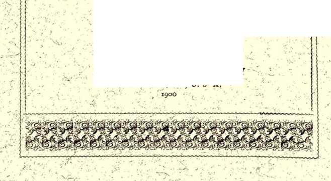
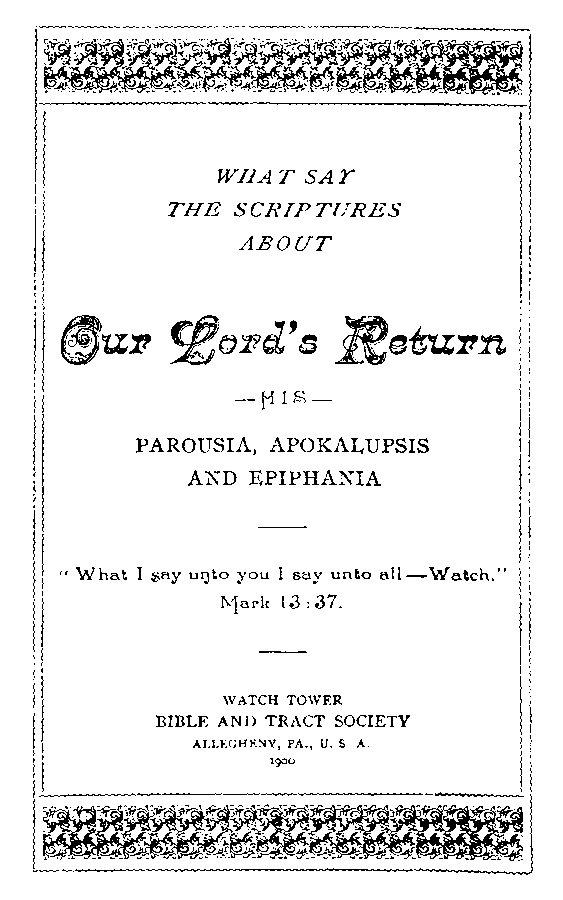

WB AT SAY
THE S CRIP TURES
ABOUT
V What T say uijto you I say unto all—Watch, NJark 13:37. .
WATCH TOWER
BIBLE AND TRACT SOCIETY ALLEGHENY, PA., U. S A.
OLD THE OLO G T U A R TE RLT.
.Vo. 48.—JANUARY, rgoo.
ENTERED AT THK POST OFFICE, ALLEGHENY, PA.
SAMPLE TRACTS FREE ! . SV INSCRIPTION PRICE, SIX CENTS PER YEAR—48 PAGES.
FOR THE
PROMOTION OF CHRISTIAN KNOWLEDGE.
PUBLISHED HY THE
WRTCH TOWE$ BIBLE & T$RCT SOC'Y
BIBLE HOUSE, ALLEGHENY, FA.
SIX CENTS A YEAR.
NO. I. THE WAGES OF SIN.
NO. 2. CALAMITIES—WHY GOD PERMITS THEM,
NO. 3. PROTESTANTS, AWAKE !
NO. 7- THE WONDKHFl I. SK.'KY, 32 pp.
NO. J2. WHY FAIL WAS PERMITTED.
NO. 15. A REPLY TO ROBERT INGERSOLL.
NO. 2J. DO YOH KNOW?
NO. 22. THE WORLD S HOPE.
NO. 27. A DARK CLUED AND ITS SILVER LINING.
NO. 28. BRINGING BACK THE KING.
NO. 31, LETTER O F WITH DRA WAL.
NO. 37. HOW READIEST THOU ?
NO. 38. HOPE OF IMMORTALITY.
NO. 40. WHAT IS THE SOVT-?
NO. 41. MUST WE ABANDON HOPE OP A GOLDEN AGR ?
NO- 4-L CROSSES TRUE AND FALSE.
NO 44. GATHERING T)1R T.OHU’s JEWELS.
NO 46. THE GOOD SH F PH RK D A N D HIS TWO FLOCKS.
Nos. i, 21, 28 and 40 can be hs«i in Swedish.
Nos. x and 21 can be had iu l.)ano-Nurwcginn,
Nos. 1, 3, 12, 21, 22, 28, 38 and 40 can be had in German.
Nus. 21 and 22 can be had in French.
No. 1 can be bad in Hollandish.
Extra copies of the above tracts wil be supplied free, on application, to subscribers; or a single sample to any one. 'Thus many may be coworkers with us and with God in scattering the truth—*‘lhe hail/’—Isa. 28 : 17. Hundreds of thousands are being circulated thus, the funds being supplied by voluntary contributions from those whose hearts and heads have been refreshed by the*e ‘‘glad tidings of great joy which shall be unto all people.”
eooklkts
THE WONDERFUL STORY, “TH E OLD , OLD S TORY.” 11!.—60 pp.
WHAT SAY THE SCRIPTURES ABOUT HEIJ.?- 38 pages.
WHAT SAY THE SCRIPTimilS ABOU T STlKlllSM?—128 pages.
TABERNACLE SHADOWS OF BETTER SACRIFICES. Ill. —130 pp.
Exira Coties of the above booklets are supplied to all regular subscriber- at ten cents each, or 50 cents per dozen : those below at five cents each, 25 cents per doz.cn.
THE BIBLE VS. THK h.VOl.l HON TIIBOltY. 48 pp.
THE PARCI.S1A OF OUR LORD.
ADDRESS AS ABOVE.
“Behold, I stand at the door and knock. If any man hear my voice \knock\, and open the door, I will come in to him and sup with him, and he with med'—Rev. 3:20.
THE PR^OUSIR
OF oup LtOpD JESUS GHRIST
AND HIS
“ Walch, therefore; for ye know not the day 1 your Lord doth come.” “ What I say unto you, I say unto all [Miraere], Watch!”
——Mail, 24: 42; Mark 13:37.---
/ HATE VER the character of the watching, and whatever the thing to be looked for, there can be no question that the exhortation to watch for an event whose precise time is not stated implies that the watching ones will know when the event does take place. Watch, because ye know not, in order that at the proper time ye may know, is the thought; and the intimation clearly is, that those who do not watch will not know: that the events which are to be known in due time to the Watchers will be recognized by them, and not recognized by others, at the time of accomplishment.
This, the only logical interpretation of our Eord’s exhortation, is fully corroborated by several of the apostles. The Apostle Paul urges us, saying: “Yourselves know perfectly that the day of the Lord so cometh as a thief in the night, and when they [the world, unbelievers] shall say, Peace and safety, then sudden destruction cometh upon them as travail upon a woman with child; and they shall not escape. But ye, brethren, are not in darkness, that that day should overtake you as a thief” (i Thes. 5:3, 4); because, being children of the light, ye brethren will be watching and be enlightened and taught of the Lord. The Apostle Peter suggests the means by -which the Lord will teach us and informs us respecting our location upon the path of the just which shineth more and more unto the perfedt day. He shows that it will not be by miraculous revelations, nor by dreams, but through the Word of testimony, the Bible. He says, “We have a more sure word of prophecy, to which ye do -well that ye take heed, as unto a light which shineth in a dark place, until the Day dawn and the Day-star arise in your hearts.”-—2 Pet. 1:19.
The united testimony of these Scriptures teaches us that, altho it was not proper nor possible for the Lord’s people to know anything definite in advance, respecting the exadt time of the second presence of the Lord Jesus and the establishment of his Kingdom, yet when the due time would come the faithful ones, the watchers, would be informed,— -would not be left in darkness with the world. It is in vain to urge, as contradicting this, our Lord’s statement, “Of that day and hour knoweth no man, no not the angels in heaven, neither the Son, but my Father only. ’ ’ Those who use this Scripture to prove to themselves and to others that no man will ever know anything respecting the time of the second advent find it to prove too much, and thus spoil their own argument; for if it means that no man will ever know, it must similarly mean that no angel will ever know, and that the Son himself will never know. This evidently would be an absurd construction to place upon the passage. The Son did not know at the time he uttered this statement, the angels did not know then, and no man knew then: but the Son certainly must know of the time of his own second advent, and at least a little while before it takes place; the angels also must know a little while before it takes place, and the true children of God, the ‘ ‘watchers, ’ ’ as we have seen above, are to watch in order that they also may know at the proper season, and not be in darkness, in ignorance, with the world; and that their watching shall be rewarded is guaranteed:—“None of the wicked shall understand; but the wise [in heavenly wisdom] shall understand.”—Dan. 12 : 10.
FOR WHAT ARE WE WATCHING?
This is an important question. Many of God’s people have been offended, “stumbled,” as respeCts the dodtrine of the second coming of our dear Redeemer, by reason of peculiar, extravagant, unreasonable, illogical and unscriptural views on the subjeCt, presented by some, who professedly love the Tord’s appearing, known as Second Adventists. But this is all wrong; we are not to rejeCt one of the grandest and most prominent doCtrines of the Scriptures, simply because some fellow-Christians have erred egregiously respecting the matter, and brought a certain amount of worldlywise contempt upon everything connected with this subjeCt. On the contrary, this doCtrine, as a glorious gem, should be given the first place among the precious jewels of divine truth, where it can cast its halo and splendor and brilliancy over all connected and related promises and blessings. It should not be left in the imperfect setting which hides its glory and beauty, but should be recovered, remounted, set in its true place, to the glory of God and to the blessing of all who are sincerely and truly his people.
We need offer no apology for the interest which we feel in this grand subject, which is the center upon which all the testimony of divine grace, through all the holy prophets, is focused. Rather do they need to apologize who, knowing that the second coming of the Lord and the resurrection of the dead hold the most important places in the Scriptures, next to the dodtrine of the atonement for sin, have nevertheless negleCted this while they have quarreled, skirmished, fought and bled over trifling things of no real importance, doCtrinally or otherwise.
Our watching is to be for the second coming of him who redeemed us, who said, “If I go away, I will come again and receive you unto myself. ” The watching is to be specially with the thought that our Lord Jesus comes at his second advent in the majesty and glory of the Father, King of kings and Lord of lords. The watching not only includes the thought of the second presence of our Lord, as King, but it has attached to it the wonderful results which are promised to flow from the coming of the King; for the coming of the King means the coming of the Kingdom for which he taught us to pray, “Thy Kingdom come, thy will be done on earth as it is done in heaven. ’ ’ And the coming of our Master, the King, and the establishment of this glorious Kingdom nieans the fulfilment of the long-waited-for promise made to the seed of Abraham: the promise which Israel after the flesh was not found worthy to inherit; the promise for which God has been selecting the members of the Bride of Christ during this Gospel age, to be with the Lord Jesus and his joint-heir in carrying out its beneficent provisions; the promise which is sure, but which has never yet had, in any sense of the word, a fulfilment; the promise which reads, “In thy seed shall all the families of the earth be blessed.”
Watching implies hoping, and it also implies waiting. We are waiting for what the Apostle terms ‘ ‘that blessed hope, the glorious appearing of our Lord and Savior Jesus Christ,” who shall transform his Church to his own spiritual image and likeness, in order that we (‘ ‘changed’ ’) may be like him, see him as he is, and share his glory, and be associated with him in his great work of bringing in the Millennial blessings to the world of mankind. Nevertheless, this waiting time and hoping time is a time of more or less tribulation, not only on the world, which lies still under the yoke of sin and under the blinding influences of Satan, but also to the waiting, hoping and watching Church, of whom the Apostle says, “We ourselves groan within ourselves, waiting for the adoption, to wit, the deliverance [from death] of our body”—the body of Christ, of which we are members in particular.—Rom. 8: 23.
HOW ARE WE TO WATCH?
Our watching consists not in looking up into the sky—“stargazing;” for those who study the Lord’s Word to any purpose soon learn that ‘ ‘the day of the Lord so cometh as [like] a thief in the night, ’ ’ and that its dawning cannot be discerned with the natural eye. If the Lord’s people would discern anything by watching the sky with their natural eyes, could not the world discern the same thing ? If the second advent of our Lord were to be an open, outward manifestation, would not the world know of it just as soon as the saints, the watchers ? In such event it could not be true that the day of the Lord should come as a thief, as a snare, unawares, upon the world, while the Church would have foreknowledge thereof—not be left in darkness.
We are to -watch the signs of the times, in the light of the Lord's Word, our lamp: as the Apostle declares, “We have a more sure Word of prophecy, . . . as a light shining in a dark place,—until the Day dawn.’’ The Gospel age has been a night-time, and the Lord’s people have been waiting for the dawm of the Millennial morning, with the promise ringing in their ears, ‘ ‘God will help her [the Church] early in the morning.” (Psa. 46:5.) The word of the Lord, through the prophets, has been the lamplight all through this Gospel age, upon the Church’s pathway, as the Lord expressed it through the Prophet David, ‘ ‘Thy word is a lamp to my feet, a lantern to my footsteps. ’ ’ The lamp of the truth of revelation has guided all the faithful, watchful pilgrims in their journey toward the Celestial City—the Heavenly Kingdom. O, what a comfort it has been, and how dreary would have been our pilgrimage without it !
“ Looking back, we praise the way God has led us, day by day! ”
Those who have taken heed to the landmarks, pointed out by the Lord through Daniel and Isaiah and Jeremiah, and all the holy prophets, realize that we have come already a much longer journey than was expected by the Church when first she started out; but we realize also from these landmarks that we have approached very closely to the end of the journey, very near to the time when the great blessing, for which God’s people have so long waited and prayed, is at hand. For instance, the Watchers have noted the Lord’s testimony through the Prophet Daniel that “the time of the end’ ’ would be a period of time (more than a century), and that in this “time of the end’’ there would be a great increase of travel, running to and fro throughout the earth, and a great increase of general intelligence, increased knowledge, as it is written, “In the time of the end many shall run to and fro, and knowledge shall be increased.”—Dan. 12:4.
Watching carefully respecting our whereabouts, hopeful and solicitous respecting the gracious things which God has promised, none of the Watchers are indifferent to these fulfilments of prophecy, which are to be seen on every hand to-day. All men discern these things, but not all alike: the faithful, the Watchers, discern them not only as faCts, but also as fulfilments of prophecy; as proofs that we are already in the period termed “the time of the end.” Further investigations and applications of the prophetic measurements prove to the watchers that we have been in ‘ ‘the time of the end” since 1799, and that it is also termed “the day of his [Jehovah’s] preparation. ’ ’ Looking about them, they see the preparation that Jehovah God is making for the Kingdom of his dear Son. They see the lifting of the curtain of ignorance, and the letting in of the light, and that thus God is using mankind at the present time to make ready in a natural way the mechanical and other arrangements and conveniences which ultimately shall be so great blessings to the world, when the Sun of Righteousness shall arise with healing in his beams, and the Millennial Day shall be ushered in, with all its multiplied blessings and mercies and opportunities;— “the times of restitution of all things, spoken by the mouth of all the holy prophets since the world began.”—Abts 3:21.
Watching intently, earnestly, interestedly, because they know of the good things God hath in reservation (1 Cor. 2:10-13), the Watchers note that Daniel’s prophecy further points out that, as the increase of travel brings the increase of knowledge, so the increase of knowledge will bring an increase of discontent to the world of mankind in general; and the result will be as prophetically stated, that ‘ ‘there shall be a time of trouble such as never was since there was a nation. ’ ’ The Watchers, seeking to note whether these things have yet a fulfilment or not, look about them and behold on every hand discontent, unhappiness; far more than when the world enjoyed far fewer of the mercies and blessings of heaven. These latter day gifts of Providence (preparations for the Millennial age), instead of provoking thankfulness, gratitude and love to God and generosity to man, produce in unregenerate hearts ambition, greater avarice, selfishness, envy, hatred, strife, and other works of the flesh and of the devil. Yes; the Watchers can clearly discern the great approaching climax of human trouble in which the Scriptures distinctly declare that all the present human institutions shall go down in anarchy, in confusion, in chaos.
But the Watchers do not lose sight of God and his providence. They see that, while the approaching social and ecclesiastical catastrophe will be the natural result of the operation of selfishness under highly favored conditions, nevertheless they remember that God is at the helm, and that he is able to cause the wrath of man to praise him, and the remainder of man’s wrath (which would not praise him) he will restrain.
The Watchers look not merely at the outward signs, as seen in the world. They scrutinize carefully and repeatedly their “chart,” the Bible’s prophetic outline of the world’s history, furnished by the King himself. It is because they see the time of trouble outlined in the prophetic chart that they know that it is sure to come, and are able in advance of others to “discern the signs of the times,” and not to be in darkness respecting the “things to come." It was in respect to this that the Tord promised the Watchers that the holy spirit should guide them into all truth, as each feature becomes due, and would show them things to come—future things—in advance of the world’s knowledge, and in advance of the facts themselves. (John 16 : 13.) But the same chart which shows the downfall of all earthly institutions, political, social and ecclesiastical, shows also that their fall is so timed in the great plan of Jehovah that it shall be the very hour in which he will establish in the hands of the elect Church (who then shall be a royal priesthood glorified—priests upon their thrones—the religious as well as the civil rulers of the world), whose exaltation shall be to the glory of God and to the blessing of every creature.
The Watchers remember well that the King gave them an outline of the history of the Gospel age at the very time that he told them to watch, intimating to them that they were to watch for the things which he therein noted. The Watchers are those who are in harmony -with the King and who have respect to his promises, and they, therefore, do not negledt the words which he spoke. And as they note this very prophecy in connection with which he tells them to watch, they see in it clearly that the day of the Tord will be ushered in at the close of this Gospel age, secretly, quietly, unobtrusively, “as a thief in the night,’’—unaware to the world, and known only to the Watchers.
PAROUSIA VS. EPIPHANIA, APOKALUPSIS.
Because not heedless, careless, indifferent servants of the King, but faithful and earnest, the Watchers have scrutinized every little particular which fell from the lips of him who spake as never man spake; and all the messages which he has sent them through his faithful apostles and prophets. And discriminating carefully, they discern that there are three words of distinctly different signification used in the respect to the Tord’s second advent; namely, parousia and epiphania and apokalupsis. Parousia is used in respect to the earliest stage of the second advent, while apokalupsis relates to the same advent later;—not that apokalupsis and epiphania relate to another or a third advent, but merely to a later feature of the second advent. These Greek words, it is true, are somewhat obscured or hidden in the Common Version of the Bible, and probably for a purpose. The Tord’s purpose evidently was to keep the world and the wicked in ignorance of his gracious plan until his due time; nor did he wish the particulars to be understood by the Watchers until nearly the time of the fulfilment. But now we are “in the time of the end,’’ in “the day of his preparation,’’ in the time in which it was foretold that then ‘ ‘the wise [not the worldly wise but the humble Watchers who are wise enough to take heed to the Word of the Lord] shall understand. (Dan. 12:10.) And hence, since many of the Watchers are not Greek scholars, God has made gracious provision through valuable helps (such as Young's Analytical Concordance and the Emphatic Dia-glolt), so that the very humblest of his people may have a clear and discriminating understanding of the meaning of certain features of his Word which hitherto have been kept hidden under imperfect translations: and these matters God himself has been bringing to the attention of his people, through Millennial Dawn, Zion’s Watch Tower and the Old Theology Tracts. The Watchers all over the world are being reached by these ‘ ‘Helping Hands for Bible students, ’ ’ which the Lord himself is extending to them.
By these helps, the Watchers are rapidly coming to see that the word “parousia," translated in our Common Version “coming,” does not mean what our English word signifies; namely, to be on the way, approaching; but that on the contrary it signifies presence, as of one who has already arrived. The Watchers note also that the Scriptures predicate certain things respecting the Lord and respecting his parousia (his presence), which clearly intimate that he will be present and doing his work, his great work (of setting up his Kingdom and smiting the nations with the sword of his mouth) wholly unknown to the world, — “as a thief in the night. ’ ’ The Watchers also notice that the Scriptures clearly indicate that after the Lord has done certain things during his presence (parousia) and unknown to the world, he will later make a manifestation of his presence; — a manifestation which will be discerned by all mankind: and the outward manifestation is designated his "epiphania" which signifies “shining forth” or “bright shining. ’ ’
The Watchers get the two thoughts respecting the Lord’s second coming: that first, altho really present a spirit being, like the angels who, we are told, encamp round about them that fear God and deliver them, and who are ‘ ‘all ministering spirits, sent forth to minister to those who shall be heirs of salvation, ’ ’ and whose ministry is an invisible one (Psa. 34:7; Heb. 1:14),— so also our Lord, now a glorious spirit being, of the divine nature, will not be manifest to the natural eye during his presence— his parousia. Hence the necessity that the Lord’s faithful ones shall"watch," because they, no more than the world, can discern a spirit being with their natural eyes. The Watchers in due time are to discern the presence (parousia) of their Lord by the eye of faith. The sleepless eye of faith will in due time take note of the “sign of the Son of Man,”— the indications of the presence of the King.
During the period of the parousia (presence) preceding the epiphania (shining forth) a certain work will be accomplished, unknown to the world, unknown to the nominal Church, known only to the Watchers. Ah, how important to us the words of our Master, exhorting us to be Watchers ! And, by the way, this watching includes a watching of our own hearts as wrell as of the Lord’s Word and the outward signs —■ to insure our worthiness to be continued in the light, and under the instructions of the great Teacher. “If any man have not the spirit of Christ he is none of his;” and if any man lose the spirit of Christ he ceases to be his; and hence we all need to “watch” that we may, as the Scriptures direct, “Keep our garments unspotted from the world;” and “Keep ourselves in the love of God, while looking for the grace [aid] of our Cord Jesus Christ, which is able to keep us from falling and to present us faultless in the presence of his glory with exceeding joy.” For whoever has the spirit of Christ may be a Watcher, and as a Watcher may know of the gracious things connected with the great “salvation which shall be brought unto us at the revelation of our Ford and Savior Jesus Christ,” but whoever ceases to have the spirit of Christ must of necessity cease also to be a Watcher and shall be in ignorance of the things of the day of the Ford like the world, of which he then probably would be a part.
As the light by which the eye of faith may discern parousia, we have the “more sure word of prophecy to which we do well to take heed.” It has shone upon the pathway of the Watchers all along through this night, but now its various prophetic rays have focussed and clearly indicate that we are already living “in the days of the Son of Man,” while, as he expressly foretold, the world in general goes on as usual, in utter ignorance of his presence, and of his harvest work, and of the beginning of the Day of the Ford; it continues as usual - eating and drinking, marrying and giving in marriage, planting and building. It is a mistake to suppose that our Ford, in giving this infomation respecting the events of the time of his presence, meant us to understand that it would be wicked for the world to eat, drink, plant, build and marry; these are not improper things and any such interpretation is strained and faulty and results from an utter misconception of the subject Our Lord wished merely to show that the world would be in ignorance of his presence “in the days of the Son of Man,” and in utter ignorance of the great time of trouble or “Day of Vengeance’ ’ which his inauguration of his Kingdom will signify to the kingdoms of this world, which are to be dashed to pieces as potters’ vessels. The ignorance of the impending trouble here will be similar to that of the people who lived in the days of Noah. “As it was in the days of Noah, so also shall it be in the days of the Son of Man.”—Luke 17 : 26.
As “the days of Noah” were not days before Noah’s time, neither are “the days of the Son of Man” days before the Son of Man’s presence. The days of the Son of Man are the days of his parousia, or presence, —invisible and unknown to the world, known only to the Watchers and seen by them only with the eye of faith. ‘ ‘As in the days that were before the flood they were eating, drinking, marrying, . . . and knew not, ... so shall also the [parousia] presence of the Son of Man be:”—the world will simply go on about its usual affairs, and know not oi the Lord’s presence. —Matt. 24 :38.
But why should our Lord be thus present ? What will be his work during the period of presence preceding his epiphania or manifestation to the world ?
His work is clearly outlined in various of his parables which were given that the Watchers might know —might not be in darkness. The parable of the wdreat and the tares shows this period of the parousia (presence) preceding the epiphania (manifestation), and represents it as the “harvest” time of this age. The Son of Man sowed the good seed, and his servants followed, doing work in the field down through the age; finally the end of the age comes when the full crop of wheat is ripe, and then the harvest is reaped. The parable shows the separation of the two classes of the nominal church during the “harvest.” For be it noted that the wheat-field is not the entire world, but merely the professedly Christian part of the world — Christendom: much of the field is not yet sown. And the parable relates only to the wdieat-field, and particularly to the wheat. The tares (spurious Christians) are dealt with only incidentally. The tares choke the wheat, yet nevertheless the Master will obtain a sufficiently large crop, for - - ‘ ‘All his purposes shall be accomplished.”
The separation of the tares from the wheat, and the gathering of the wheat into the garner of heavenly conditions precedes the work of cleansing the wheatfield of its symbolic tares by symbolic “fire;” and this entire harvest work is to take place during the parou-sia (presence) of our Ford, before his epiphania (manifestation) . He is the Chief-Reaper, and all the underreapers will work under his direction and eye; and every kernel of true symbolic ‘ ‘wheat’ ’ will be gathered into the glorious symbolic “garner” by resurrection and “change.'
The truth will be the separating medium, and not until the separation is complete and the “wheat” all garnered into the glory of the heavenly nature, will the ‘ ‘fire, ’ ’ the great time of trouble mentioned by the Prophet and by our Lord, burn and consume, symbolically, all the “tares:” so that thereafter none will make false professions of being Christians while really of the world and possessed of its spirit.
The parables of the Pounds and of the Talents cover this same period of time. In both of these the Lord represents himself as a great householder and heir to a throne, who has gone into a far country to be invested with kingly powers and to return to use those powers. Departing, he left with his servants various riches of grace and privilege, ‘ ‘to every man according to his several ability,” saying to them, “Occupy till I come. ’ ’ The return of the nobleman of the parables unquestionably represents the second coming of our Lord and Master. Now note the work first due to take place upon his return as King, as shown by these parables. He does not first deal with the rebellious world, — those who would not have him to rule over them; but, first calls “his own servants,” and reckons with them—rejecting some from further service because of unfaithfulness, and accepting others to a participation in the joys of the Kingdom which he at once establishes.
This reckoning with the servants signifies a reckoning with the Church first, after his return; and corresponds to the separating of the wheat and tares, in the other parable. It is comparatively easy for anyone to realize that this part of the Lord’s work at his second advent is the work which precedes the epiphania or manifestation to the world. It is during this period that the Watchers are to be aware of the presence ( parousia') of the Lord, and of his scrutiny or judgment of them, which will then be in progress. Only the faithful will know, however, — only they will be “accounted worthy to stand before the Son of Man” in that judgment-all found unworthy shall “stumble,” “The wicked [and slothful servants] shall not stand in the assembling of the righteous.” (See Psa. 1:5.) It is of this period of his presence, and this feature of his work, that the world is to be in total ignorance, and ‘‘not know,” until, having finished reckoning with his servants, and having glorified the faithful, the judgment of the world shall begin with ‘ ‘a time of trouble such as was not since there was a nation. ’ ’ That trouble is symbolically pictured as a fire, and we are told by the Apostle that our Lord shall be revealed (apoka-lupto — uncovered, disclosed, made manifest) in flaming fire (judgments), taking vengeance.
All who are Watchers, all who have taken heed to ‘ ‘the more sure word of prophecy, ’ ’ including the Master’s description of the events of 11 the days of the Son of Man, ’ ’ can readily discern that the world would not go on in its usual routine eating, drinking, planting, building, marrying, etc. — if they knew of the Lord’s presence, and the progress of the ‘‘harvest” of the Gospel age. If they knew of the Lord’s presence and that the reckoning with the servants had commenced, and that the next thing in order would be judgments upon themselves, they would change their usual order of affairs considerably: they would be in great trepidation; because only those who are in sympathy with the Lord and the righteous government which he is about to establish, when he shall lay judgment to the line and justice to the plummet—only these can in any degree be ready to welcome him: all others have the spirit of fear, and are under the blinding influences and misrepresentations of Satan. ‘ ‘The god of this world hath blinded the minds of them that believe not, lest the glorious light [of the gospel of Christ] should shine unto them. ’ ’ Because of ignorance, therefore, the world would be in great fear, if they knew the fadt of the beginning of the day of the Lord, which is to be to them the “day of vengeance.”* Very evidently, therefore, this reckoning with the Church and the reward of the faithful will precede our Lord’s epiphania or apokalupsis. To use one of his own figures, we might say that his day or time of presence — “the day of the Lord” — will come as a thief in the night; and in this time he will gather his virgin Church discriminatingly, and take her as his Bride to himself, —changing her from earthly nature and conditions to spiritual or heavenly conditions, to be like him, see him as he is, and share his glory. And since the saints have always been ‘ ‘the salt of the earth, ’ ’ we may readily discern that the taking away of the salt of the earth would leave mankind in a very deplorable condition, in which corruption would spread rapidly: and this is exactly what the Scriptures indicate.
We are not, however, to understand that the Lord will take the Church away to heaven, and then come back again, and make his epiphamia, or apokalupsis, for that would be a third advent, which is nowhere even hinted in Scripture. The “change” of the Church from earthly conditions and nature to heavenly, spirit conditions and nature wall first be in order, and then they twain, the Bridegroom, Christ, and the Church, his bride, thus made one in nature and in heavenly Dispirit power, will commence the work of putting down all rule and authority contrary to the divine rule, -bringing all things into subjection to the heavenly Kingdom, the Millennial Kingdom. Our Lord and his
♦Millennial Dawn, Vol. iv., "The Day of Vengeance."
Church will not be absent from the earth during the period of the world’s tribulation; but on the contrarywill continue present, but invisible, bringing upon the world the tribulation, foretold in the Scriptures, which will result in the humbling of the hearts of mankind, that they may say eventually, “Come, let us go up to the mountain [Kingdom] of the house of the Lord, that he may teach us of his ways, that we may walk in his paths.”
This fadt is abundantly proved by the Lord’s statement of what shall be the reward to the overcomers, a part of which is, “Hethat overcometh, and keepeth my words to the end, to him will I give power over the nations: and he shall rule them with a rod of iron; as the vessels of a potter shall they be broken in pieces: even as I have received of my Father. (Rev. 2:26,27.) Again, the same matter is mentioned by the Prophet David, saying, “This honor have all his saints,—to execute the judgments •written.” It is manifest, therefore, that the Church, altho absent from the world during the period of the tribulations in the sense of being “changed” from human to divine nature, will be present in it with Christ, as associate executors of the divine justice, breaking to pieces the present order of affairs, and ready to heal the hearts of the world as soon as they shall be broken in their pride, and prepared for the “Balm of Gilead.”
THE TIME OF THE PAROUSIA.
It will doubtless surprise many- to learn that there is much Scripture proof that we are already in the time of the presence {parousif of the Son of Man,—that we are already living “in the days of the Son of Man.” At first some will be inclined to say, ‘ ‘Where is the promise of his [_parousia\ presence, while all things continue as they were from the beginning?” Peter foretold that some would thus question and be surprised at this information, that we are living in the days of the Son of Man, while there is as yet no outward manifestation of his presence, but the affairs of the world continue in their ordinary channels. (2 Pet. 3:4.) The answer to the question is, as we have just pointed out, our Lord’s own declaration that in his days of presence the world would be eating, drinking, planting and building, and know not. That is the promise of his presence, while all things continue as they were. Could it be more explicit ? A totally different question, however, is—
WHAT ARE THE PROOFS OF HIS PRESENCE?
This is a reasonable inquiry. We would not be justified in believing that the Lord is present upon any slight evidence, even tho we know in advance that he is a spirit being, whose presence W’ould be invisible without a miracle;—and even tho we know in advance, from the parables, that he will be present, but invisible, in the harvest time of this age, in the time of reckoning with his servants, preparatory to their glorification. We have a right to expect clear, reasonable ground for faith, before accepting any matter which implies so much. We are not, however, to ask or to expedt evidences to natural sight: if we are of the Watchers, who have ‘‘the eyes of their understanding opened’ ’ to see wonderful things in the divine Word, then these eyes of our understanding must also be the eyes of our faith. Hence, the true Watchers are to expedt reasonable, satisfactory evidence for faith, and not ocular demonstrations of an invisible parousia. As the Apostle explains, “We walk by faith, not by sight.”
To our understanding there are strong proofs that our Lord’sparousia began in the Autumn of 1874. We have seen nothing with our natural eyes; only with the eyes of the understanding, only in the light of ‘ ‘the more sure word of prophecy, ” do we know this, which we sincerely believe and affirm, and which is important news to all who claim to be Watchers. The fact that any Watcher should have remained in ignorance of this important event for now twenty-four years would seem of itself to be an indication that he had not been properly awake to the use of his privileges and opportunities—that he had not been sufficiently watchful of the sure word of prophecy to which he was instructed to take heed; and that therefore he had been left at least partially ignorant of the important things transpiring throughout the world during these years. To this extent many of the Lord’s people have been with the world and similarly ignorant: and yet we may reasonably assume that the Lord did not expect all of his watching servants to discern the matter at the same instant of time. True, those who saw early have had special blessing for the longer time; but, as we saw above, the preparation for the knowledge of the time lies largely in the right attitude of heart—in its humility and possession of the various graces of the spirit of Christ.
Lest we should get a misapprehension respecting this matter of the discerning the Lord’s parousia, we do well to take heed of the parable of the ten virgins, which evidently was given to throw special light upon this point. That parable shows a false announcement of the arrival of the Bridegroom in 1844, which brought to the subject considerable reproach, but which nevertheless wras of great advantage, as stirring up the ‘ ‘virgin” class (the pure, the consecrated) to fresh trimming of the lamp of truth—investigating the sure word of prophecy. The parable shows, also, that the “virgins” in general fell asleep, yet, nevertheless, in due time all would be reawakened by the prophetic knocking, and the knocking of the signs of the times, -which indicate the Bridegroom’s presence. And the parable shows that the result w’ill depend upon how much oil (holy spirit) the 1 ‘virgins’ ’ may have in their vessels (in their own hearts), as well as in their lamps (the Scriptures). Applying this parable, then, we may reasonably suppose that some of the Lord’s true people have temporarily fallen asleep on this subject of his second coming, and that the sleeping ones will include some who have his spirit in their hearts, and wTho will be fully ready to welcome the Master when they shall awake, and whose lamps -will be duly trimmed and burning and ready to enable them to discern the signs of his parousia, wdien once their attention is brought to the subject. In harmony with this we find that many who get awake on this subject now come into the clear light of present truth much more rapidly than did some in the past: doubtless partly because present truth can now be presented to them more concretely than ever before through the printed page. It is in the interest of this true “virgin” class that we now write: we have no desire to awaken the worldly; this knocking of the prophecies announcing the Parousia is not for them—-besides, the worldly are so soundly asleep that it will require the terrific crashing of present institutions and the earthquake shakings of social revolution to thoroughly awaken them to a realization of fae presence of the great Judge—Immanuel. The true Watchers on the contrary, if they slumber at all, sleep lightly, being on the qui vive of expectancy and hope for the long-waited-for Bridegroom. We would merely whisper in the ears of this class the one word, "Parou-sia!” assured that all true Watchers (and the Lord alone knoweth them that are his) will be aroused by that word, and trim their lamps on the subject.
Is the question asked,—What portions of the sure word of prophecy indicate that the presence of our Lord began in the Autumn of 1874? We answer that there are several lines of prophecy which interlace and corroborate each other in this testimony; but, as might be expected, since the entire matter was to be hidden from the world, and ‘ ‘none of the wicked, ’ ’ but only the “wise” are to understand (Dan. 12:10), and these wise only to understand when the due time would come,— for these reasons, it must be evident to all that these prophecies, while clear and forcible and positive, are nevertheless somewhat under cover. We cannot here attempt to give a complete and comprehensive statement of these prophecies; that has already been done in four volumes aggregating eighteen hundred pages.2 Here we can only give a very brief resume, leaving it for the true Watchers to seek that they may find; to knock if they would have the door of divine revelation opened to them; to use the keys which God has provided, if they are interested in penetrating into “the deep things” of the divine Word, now due to be understood; to eat of the meat of present truth, “things new and old, ’ ’ if they hunger and thirst after righteousness and true knowledge.
“IN THE DAYS OF THESE KINGS.”
(i) We have a number of general prophecies, indicating that we are living in about the time of the Master’s second presence. We have already referred to Daniel’s testimony respecting “the time of the end, ” in which many will run to and fro, and knowledge will be increased, and the wise understand, and which the time of trouble follows. Then we have the inspired dream of Nebuchadnezzar, and its inspired interpretation by Daniel, showing the earthly governments which would bear rule over the earth;—during the interim between the overthrow of the typical Kingdom of God, whose last king sitting upon the throne of David was Zede-kiah, and the installation of the true King, Emanuel, in his Millennial Kingdom glory. These different governments of earth are here pictured as a great image; Nebuchadnezzar’s government, the first universal empire of earth, being represented by the head of gold; the Medo-Persian Empire, which, according to history, was the second universal empire, is here shown as the breast and arms of silver; the Grecian empire, which overthrew’ the Persian, and became the third universal empire, is represented by the belly and thighs of brass; the Roman empire, which succeeded the Grecian, and constituted itself the fourth universal empire of earth, was represented in the image by the legs of iron—strong exceedingly; and the later development of the same Roman empire with the intermixture of papal influence is represented in the image by the feet, which were partly iron (civil government), and partly of clay (ecclesiastical government — Papacy). These were to constitute the sum total of Gentile dominion; and ‘ ‘in the days of these kings’ ’ (represented by the ten toes of the image), Jehovah God himself would establish his Kingdom—the very Kingdom for which we pray, “Thy Kingdom come! ”
We are all witnesses that the heavenly Kingdom has not yet come,—that we are still under the dominion of “the prince of this world’’—the prince of darkness. All the efforts to prove to us that the greedy and bloody governments of Christendom, so-called, are the Kingdom for which we prayed, and were taught to pray, could not prevail: we could never recognize these as Immanuel’s Kingdom: they are only the kingdoms established by Antichrist, and recognized by Antichrist, and named by Antichrist “Christendom." The true Kingdom waits for establishment at the hands of him whose right it is; and he has promised that, when he sits upon his throne, all his faithful ones, the 1 ‘little flock’’ of the Gospel age, shall sit in that throne with him, and be associates in the work and in the honor of blessing the world.
The Church is not neglected in the picture of earthly dominion given to Nebuchadnezzar, and interpreted by the Prophet Daniel. She is shown therein as a stone taken out of the mountain without hands (by divine power). This stone represents God’s Kingdom (Christ and the Church), and the inspired dream and explanation show that the disaster which shall come to the kingdoms of this world, represented in the image and in the toes of its feet, would come through the impact or smiting of the image by the stone. Daniel says: “A stone was cut out, which, without being in hands, smote the image upon his feet. . . . Then was the iron, the clay, the brass, the silver and the gold broken to pieces together, and became like the chaff of the summer threshing floor, and the wind carried them awray that no place was found for them: and the stone that smote the image became a great mountain [kingdom], and filled the whole earth.”
The explanation is that—“The great God hath made known to the king [and indirectly more particularly to the Watchers] what shall come to pass hereafter.” “Az the days of these kings shall the God of heaven set up a kingdom which shall never be destroyed, and the kingdom shall not be left to other people; [it shall have no successors, for the others will all be destroyed] it shall break in pieces and consume all these kingdoms, and it shall stand forever.” Here is a prophecy which gives a full delineation of the empires of earth, to which God granted dominion during the interim between the removal of the typical crown from his typical kingdom, and the institution of the crown of righteousness and glory upon the true King in the inauguration of the Kingdom of Heaven.
Even the surface evidences are that human empire has nearly run its course, and that heavenly empire is needed to deliver the world from its own selfishness. But the sure word of prophecy, if carefully scrutinized by the Watcher, reveals still more. It shows that the next universal empire will be the kingdom of God’s dear Son, and further the interesting fadt that the total lease of power to the Gentiles, is in the Scriptures known as “the times of the Gentiles;” and that these “times” are seven times, and that each of the seven times is a period of three hundred and sixty years, and that consequently the complete period of the seven times is 2520 years. Hence the Watchers may reckon that Gentile rule will terminate and Immanuel’s rule be fully set up in 2520 years from the time the Lord removed the diadem from Zedekiah, saying: “Oh thou profane and wicked prince, . . . take off the diadem, remove the crown; I will overturn, overturn, overturn it, until he comes whose right it is, and I will give it unto him.” The period of overturning of the Lord’s typical Kingdom and the removal of the crown must correspond to the period of the lease of empire to the Gentiles and be 2520 years. And measuring this period, we find that 2520 years will expire with the close of the year 1914, A. D. and consequently that by that time Gentile rule will be no more w’liile God’s Kingdom will then hold sway.
But the scrutinizing Watcher will readily perceive that it is one thing to know the time when earthly dominion shall cease, and give place to the completed Kingdom of God, while it would be a totally different matter to know when the “stone” Kingdom would begin to smite the image upon its feet, preparatory to its destruction. This period of smiting of the image, which precedes its destruction, must also precede the full establishment of God’s Kingdom to fill the whole earth. This smiting period is the period of theparou-sia; the period in which Christ is present, gathering his “jewels,” his “eledt,” and in which he will smite the nations with the rod of iron and with the two-edged sword of his mouth, dashing them in pieces as a potter’s vessel, and preparing mankind for the royal majesty of the heavens. Let the Watchers note critically the Prophet Daniel’s explanation that it will be ‘ the days of these kings’ ’ (the kingdoms represented in the feet and toes of the image—the divisions of Papal Rome) that the God of heaven will set up his kingdom. God began the selection of his Kingdom class in the days of Civil Rome—represented by the legs of iron: he has continued the selection ever since, and the setting up or bringing of his Church (Kingdom) into power comes toward the close of Gentile power, but before it ends; for it is to be “in the days of these kings” and not after their days. Now note the similarity of the expressions ‘ ‘in the days of the Son of Man” and “in the days of these kings,” and give both the same significance and remember that, as we have proven, they will be the same days—days before the lease of Gentile power expires, in which the Son of Man will be present to ‘ ‘set up' ’ his Kingdom, which shall a little later destroy all these Gentile kingdoms.
TYPICAL ISRAEL’S EXPERIENCES WERE PROPHETIC.
(2) Take another line of prophecy, concealed, and yet very simple and easy of appreciation when once the mind grasps it. The Scriptures show us that the fleshly house of Israel and all of its institutions and affairs were typical foreshadowings of the spiritual house of Israel, and its higher institutions, better sacrifices, etc. It need not, therefore, surprise us to find that the length of the Jewish age—the length of the divine favor to fleshly Israel,—was typical also, and that it gives us the exact measurement of the Gospel
age,—God’s dealings with and favor toward spiritual Israel.
Jacob’s name was changed to Israel, which signifies “A Prince with God,” and his descendants were therefore termed Israelites—the people of the Prince with God. But the antitype of Jacob is Christ, the true Prince with God, not after the flesh, but after the spirit; and his house is spiritual Israel. Jacob’s twelve sons first inherited his name and blessing, and through them it descended to all the fleshly house of Israel: Christ’s twelve Apostles inherited his name and blessing, and through them it has descended to all the spiritual house of Israel. As the typical house had a high priest, Aaron, so the antitypical house has a greater high priest, Christ Jesus our Lord, the high priest of our profession. As the fleshly house had a priesthood under Aaron, so the spiritual house has ‘‘a royal priesthood’ ’ under Christ, to whom the promise is made that they shall be kings and priests unto God, who shall reign on the earth, after their present time of sacrificing is ended. So we might proceed with everything that fleshly Israel had and find its duplicate on a higher plane, in spiritual Israel, but we will not go into details here: suffice it to notice further that the Jewish age or period of fleshly Israel’s favor ended with a ‘ ‘harvest’ ’ period of forty years. This began with our Lord’s baptism, lasted three and a half years, as a national test, and when that nation was rejected at the time of our Lord’s Crucifixion, the harvest work proper began—a separation of the wheat from the chaff—a time of gathering out of that rejected nation such as were ‘‘Israelites indeed,” previous to the great time of trouble which came upon the nation and which utterly destroyed their national polity a. d. 70. All of this is likened to a “harvest” season, and its first garnering of the wheat and subsequent burning of the chaff. And our Lord gives instructions to us (Matt. 13) that this Gospel age of spiritual Israel’s favor will likewise end with a harvesting time, gathering the wheat together and ultimately destroying the tares. In the harvesting of the fleshly house our Lord, in the flesh, was the Chief-Reaper, and his Apostles were co-laborers: in the harvesting of the spiritual house our Lord, a spirit being, is to be present as the ChiefReaper, and members of the spiritual house are to be also reapers.
Now note the time correspondencies. The Jewish age, from the death of Jacob to the death of Christ, was 1845 years long—to the beginning of our Lord’s ministry 1841 % years long, and to the time of the utter destruction of their nation, in a. d. 70, i83r% years long. Notice how the Gospel age corresponds to this. The Gospel age did not begin with our Lord’s birth: it began after our Lord’s death and resurrection, when he commissioned his disciples to ‘ ‘preach the Gospel to every creature.” (Our Lord’s previous work during the three and a half years of his ministry was the offering of the Kingdom to the fleshly house, to test them, and to prove that they were unready to receive the true Kingdom.) Applying the foregoing measurements of the Jewish age to the Gospel age, beginning it at the time of our Lord’s death and resurrection and the Pentecostal blessing, in the Spring of A. D. 33, we find that the period of 1841% years from the death of Jacob to the beginning of our Lord’s ministry, would measure from the Spring of a. d. 33 to the Autumn of 1874; and the 1845 years of the Jewish age, from the death of Jacob to the rejection of fleshly Israel, applied here, measuring from the Spring of A. D. 33, would reach to the Spring of 1878; and the 1881 Yz years from the death ofjacob to the full destruction of Israel’s polity in A. I). 70, finds its correspondence in this Gospel age, by measuring 1881% years from the Spring of A. D. 33, which would bring us exactly to (Autumn) 1914 a. d.—the very year and time shown us by Daniel’s prophecy to be the full end and limit of the “Gentile times.” Can this be accidental? Nay; it is design. What stronger testimony could be asked by the eye and ear of faith. Surely, anything plainer or clearer would be sight and leave no room for faith.
THE JUBILEE PROPHECY.
(3) Note another prophecy, similarly hidden in type in the Mosaic law, — Israel’s Jubilee Year. No one is prepared to understand this line of prophecy who has not first learned that the second coming of our Cord is not for the purpose of destroying the world, but for the purpose of blessing it according to the promise made to Abraham, ‘ ‘in thy Seed shall all the families of the earth be blessed,”—with the favors lost in Adam. These will be offered to all and will be made perpetual to those who will accept them on the terms of the New Covenant. None can see any beauty or typical significance in Israel’s Jubilee who have not learned that God has provided ‘ ‘times of restitution of all things’ ’ which are to begin in connection with the second advent of the Redeemer.—See Abts 3 :19-23.
We find that Israel’s Jubilee years, in which every person and family had restored to them every lost possession and all personal liberties, was intended to be a type of the coming time of restitution, when a full opportunity for attaining freedom from sin and from Satan, and from the hereditary weaknesses of the flesh, shall be presented to all, and when the earth shall again revert to the human family in general, for whom it was created, and for whom it was redeemed by Christ, after being lost through Adam’s transgression. We find that the Scriptures indicate, in connection with these jubilees, a system of counting by multiples; and that a Jubilee of Jubilees, or fifty times fifty years (2500 years) constitutes a Great Jubilee cycle and that such a cycle began to count after fleshly Israel had observed her last typical Jubilee. We find from the Scriptures that Israel’s nineteenth Jubilee year was her last, in the year B. C. 626. Knowing that the Jubilee was a part of the Law, and that no feature of that Law, not one jot or tittle, can pass away without reaching a fulfilment or antitype, we measure the cycle of the Great Jubilee 2500 years from the date when the last typical Jubilee was kept, 626 b. c., and find accordingly that the antitypical Jubilee or Great Jubilee of Jubilees should have begun in October, 1874. Thus,— 625 years b. C. plus 1875 years A. d. are 2500 years, which would include the Jubilee year: consequently, with the end of the year 1874, Jewish time, October, the antitypical Jubilee of 1,000 years instead of one year was due to begin.
Watchers will note carefully the correspondency of this date, and the character of the event to be expected, with the finding of our previous examinations (1 and 2), which showed us this very same date, October, 1874, was the time wrhen the “harvest” of this age was due to begin, and when the Lord himself, as the Chief Reaper, was due to be present. The only thing necessary to connect this Jubilee prophecy with the others is the statement of the Apostle Peter in Acts 3:21, which shows that our Lord must be present (at his second advent) at the beginning of the times of restitution of all things, and as already seen, these restitution times are the Antitypical Jubilee times typified by Israel’s Jubilees. Thus we have two very simple but clear and very important lines of Scripture testimony which indicate clearly that the parousia of our Lord was due to begin in October, 1874, and both show us the character of the work which we should expect would be in progress during the time of his presence, preceding his open manifestation to the world, his epiphania, his apokalupsis.
THE DAYS OF WAITING ARE FULFILLED.
(4.) Take another line of prophecy: we find that the 1260 days, and the 1290 days, and the 1335 days, so particularly set forth in Daniel’s prophecy, and corroborated in Revelation, have had fulfilments, —the 1260 days ending in 1799, the 1290 days ending in 1829, and the 1335 days ending in 1874. Our friends known as ‘ ‘Second Adventists’ ’ were wont to use these “days of Daniel,” and once applied them as we do here: but they abandoned them after 1874 passed and they failed to see Jesus with their natural eyesight, in a body of flesh and with Calvary’s scars. They have dropped these “days of Daniel” entirely because they find no way of applying them which would prolong them beyond 1874. The fault is not with the days nor with their application as above; but with the wrong things expected. They, in common with others who look for the Second Advent, err in expecting that the Gospel age which has been a spirit and faith epoch will end with a flesh and sight deterioration—in expecting that the spiritual kingdom of Satan will be followed by a fleshly kingdom of Christ. But the Watchers amongst the Adventists as well as in other denominations, are getting the eyes of their understanding opened by the anointing of the promised eyesalve.—Rev. 3: 18.
It was concerning this last period that the angel declared to the Prophet, “Oh, the blessedness of him that waiteth, and conieth to the 1335 days. . . . Thou shalt rest, and stand in thy lot at the end of the days.” What blessedness? We answer, a joy of heart and rejoicing to the Watchers is what is here intimated. It is since this date, October, 1874, where Daniel’s 1335 days intimated that a great blessing would begin, where the Jubilee types indicated that the restitution of all things would begin, (which implies the second presence of the great Restorer), and where the parallelism of the two houses of Israel shows that the second presence of our Lord as the Great Reaper is due,—from this date a great blessing has come to the Watchers. Since then the Word of God has opened before us in a most marvelous manner. Since then the sure word of prophecy as a lamp to our feet has shown us many evidences that we are in the end of the age. Since then the day-star has been rising in the hearts of the Watchers, and has illuminated our minds, releasing us from the terrible nightmare of error respecting eternal torment, revealing to us the true character of our Heavenly Father, making plain to us the necessity of the great atonement for sin, and showing us distinctly the objeCt of the permission of evil and revealing, one by one, various features of the divine plan, •— the high calling of the Church to the divine nature, and to joint-heirship with Christ in his Millennial Kingdom; and the resulting blessing of restitution to human perfection for the world of mankind in general. Ah yes! all who have been brought “out of darkness into this marvelous light’ ’ can appreciate the words of the angel, and heartily say, Blessed are our ears, for they hear, and our eyes, for they see, for many prophets and many righteous persons have desired to know these things, and have not known them.
(5) We might refer to other prophecies and types in the Scriptures, which show that we are living in the “harvest” time of this age, in the parousia of the Son of Man, but our space forbids. The fact that this world, as he predicted, continues in its usual course, eating, drinking, planting and building, etc., and knows not of his presence, so far from being an evidence against these prophetic testimonies, quite to the contrary, shows us that the fulfilment is coming, just as the Master predicted: that the day of the Tord, the day of his presence, has come upon the world as a thief in the night, secretly, quietly, stealthily, unknown;—the only ones favored with a knowledge of events transpiring on the other side of the vail being the Watchers who, if they have slumbered at all, have nevertheless maintained a waiting attitude of readiness for the announcement,—
“BEHOLD THE BRIDEGROOM!”
This is the announcement which we are now giving—Not, Behold, the Bridegroom cometh, but ‘ ‘Behold the Bridegroom ! ” already here, present, knocking gently with the prophecies to arouse the Virgins, but not to arouse the world. (Rev. 3:20.) This is the reading of the oldest Greek Manuscripts, which omit' Someth." Our Rord says, “If any man hear my voice [knock] and open the door, I will come in to him and and sup with him.” This message to the present Laodicean phase of the Church, intimates very clearly (1) that the “knock” and “voice” will be inaudible to natural ears, and heard only by the ears of the understanding, the hearing of faith; (2) that it will not be a denominational knock or call (as to Adventists, Presbyterians, etc.), but (3) that it will be a knock that must be heard individually and responded to individually—“any man” who hears the “knock” or “voice,” if he so wills, may exercise faith and open the door of his understanding and realize his Lord’s second presence.
The man who never hears the “knock” is not counted worthy to hear it. But those who hear are evidently not compelled to respond and to accept the present, knocking King: hence he says, if the hearing one open the door, I will come in. However, only those who recognize the “knock” and who respond and by faith open to the Lord and receive him as their present King—only these are to have the great blessing of spiritual nourishment—the feast of ‘ ‘meat in due season, ’ ’ ‘ ‘things new and old, ’ ’ which the master promised to provide at that time, to strengthen the faithful for the judgments, trials, testings and siftings which must “begin with the house of God.” “I will come in to him and sup with him and he with me. ’ ’ — Compare Rev. 3: 20, and Luke 12 : 37.
As therefore we softly whisper—‘1 Behold the Bridegroom I ” it is not with any hope of arousing the world to faith in the Lord’s presence, etc. They are not worthy to know and would only misuse the knowledge now. By and by, in the Lord’s due time, they shall know—in the period of the epiphania and apokalupsis of the Son of Man. They will be awakened by the great crash of the day of trouble. We do, however, promulgate the message, ‘ ‘ Behold the Bridegroom [present] 1 ’ ’ with the confident expectation that all who are of the “Virgin” class (the pure, the justified and consecrated), will be permitted to hear the message, will be aroused by it, and will trim their lamps (examine the Scriptures, investigate the subject), and find the message true, before the “door is shut” and the great trouble begun. We well know, however, from the Lord’s prophetic parable, that among those who will be aroused to investigation, there will be two classes, because there are both wise and foolish “Virgins.” The wise are those who have not only consecrated their all to the Lord, but who are living accordingly,—not unto sin, nor unto self, nor unto sectarianism, but unto the Lord: these, as intimated in the parable, will find no difficulty in trimming their lamps and and recognizing the presence of the Bridegroom. But the foolish Virgins, overcharged with the cares of this life, or the deceitfulness of riches (wealth, reputation, influence, etc.), will not have within themselves (‘ ‘in their vessels”) a sufficiency of the oil (holy spirit); and consequently they will be unable to get the light in time to go in with the wise virgins before the eleCt number shall be completed, and the door of opportunity to become part of the Bride of Christ, shall forever close. True, they will later obtain the oil, as is shown in the parable, but too late to be of the “little flock” who shall be accounted worthy to share the Kingdom and to escape the great time of trouble coming upon the world: the foolish virgins will be obliged to pass through the trouble with the world, and will share thus in its distress, represented in the parable by the words, “wailing and gnashing of teeth.”
PAROUSIA. IN THE NEW TESTAMENT.
The word parousia occurs in the following texts of the New Testament, in each of which it should be properly translated “presence:”—
“What shall be the sign of thy presence —Matt. 24:3.
“So shall also the presence, of the Son of Man be.” —Matt. 24 : 27, 37, 39.
“Thejr that are Christ’s at his presence.”— 1 Cor. 15:23.
‘ ‘What is our hope, or joy, or crown of rejoicing ? Are not even ye, presented before our Tord Jesus Christ at his presence ? ”—1 Thes. 2:19.
That “he may establish your hearts unblamable in holiness before the Tord, even our Father, at the presence of our Ford Jesus Christ.”—1 Thes. 3 : 13.
“We which are alive and remain unto the presence of the Lord shall not hinder them which are asleep.” —1 Thes. 4:15.
“Be preserved blameless unto the presence of our Lord Jesus Christ.”—1 Thes. 5 : 23.
“Now we beseech you, brethren, by the presence of our Lord Jesus Christ, and our gathering together unto him.”—2 Thes. 2:1.
‘ ‘Be patient, therefore, brethren, unto the presence of the Lord.”—James 5 : 7.
“Be ye also patient, stablish your hearts, for the presence of the Lord drawe th nigh.”—James 5:8.
‘ ‘There shall come in the last days scoffers [in the Church] walking after their own lusts [desires], and saying, Where is the promise of his presence ?” — 2 Pet. 3 : 3, 4.
The word parousia is properly translated (‘ ‘presence”) in 2 Cor. 10 : 10, and Phil. 2 :12.
EPIPHANIA IN THE NEW TESTAMENT.
The Greek work epiphania signifies bright shining or manifestation. It is rendered ‘ ‘ appearing ’ ’ and “brightness,” and occurs as follows:—
“Keep this commandment without spot unrebuk-able until the appearing of our Lord Jesus Christ, which in his times he shall show who is the blessed and only potentate, the King of kings and Lord of lords.”— 1 Tim. 6 :14, 15.
“I charge thee, therefore, before God and the Lord Jesus Christ, who shall judge the quick and the dead at his appearing and his Kingdom.”—2 Tim. 4:1.
“There is laid up for me a crown of righteousness which he shall give me at that day: and not to me only, but unto all them also that love his appearing.''— 2 Tim. 4 : 8.
‘ ‘Looking for that blessed hope and the glorious appearing of the great God and our Savior Jesus Christ.”—Titus 2:13.
“Then shall that Wicked One be exposed, whom the Lord shall consume with the spirit of his mouth, and shall destroy with the brightness \epiphania—bright shining] of his coming ^parousia — presence]. ” — 2 Thes. 2 : 8.
APOKALUPSIS IN THE NEW TESTAMENT.
The Greek words apokalupsis and apokalupto signify revealment, uncovering, unveiling (as of a thing previously present but hidden). The name of the last book of the Bible is from the same root —■ Apocalypse or Revelation. Apokalupsis is rendered revealed, revelation, appearing, coming and manifestation, in the following texts which relate to the Lord’s second presence and power and glory, as these shall be made known,— uncovered or revealed to the world. Many of these texts also show that when he shall thus be revealed, his Church will be with the Lord and be revealed or manifested at the same time and in the same manner.
‘ ‘The sufferings of this present time are not worthy to be compared with the glory which shall be revealed in us.”—Rom. 8 : 18.
‘‘Rejoice, inasmuch as ye are partakers of Christ’s sufferings; that when his glory shall be revealed, ye may be glad also with exceeding joy.”—1 Pet. 4 : 13.
“An inheritance incorruptible, and undefiled, and that fadeth not away, reserved in heaven for you, who are kept by the power of God through faith unto salvation ready to be revealed in the last time.”—1 Pet. 1 =4, 5-
“A partaker of the glory that shall be revealed.'' —1 Pet. 5:1.
"Every man’s work shall be made manifest: for the day shall declare it, for it shall be revealed by fire. ’ ’ (1 Cor. 3:13.) Here the reference evidently is to the testings of the Lord’s people during the period of his presence in the end of the age. The Apostle’s words thus agree with our Lord’s prophecy of the same testings, saying that “there is nothing covered that shall not be revealed''—uncovered.—Luke 12 :2.
“Hope to the end for the grace that is to be brought unto you at the revelation of Jesus Christ.” —1 Pet. 1:13.
“The Lord Jesus shall be revealed from heaven in flaming fire [judgments against all unrighteousness], taking vengeance.”—2 Thes. 1 :.7, 8.
“So that ye come behind in no gift; waiting for the coming \apokalupsis -—revealment] of our Lord Jesus Christ.”—1 Cor. 1 : 7. [The Lord’s people will need to keep active, watching and waiting for the great blessing until the manifestation or revealment of the Lord; but if Watchers, they shall be made aware of his presence (parousia) and the work of “harvest” beforehand and share in the revealment.]
‘ ‘That the trial of your faith . . . might be found unto praise and honor and glory at the appearing \apo-kalupsis—revealment'} of Jesus Christ.” — 1 Pet. 1 ; 7.
“For the earnest expectation of the creature [mankind] waiteth for the manifestation \apokalupsis — revealing ] of the sons of God [the Church]. ” — Rom. 8 : 19.
“The same day that Lot went out of Soaom it rained fire and brimstone out of heaven, and destroyed them all. Even thus shall it be in the day when the Son of Man is revealed.” (Luke 17: 29, 30.) That is to say, the judgments of the coming ‘ ‘time of trouble’ ’ as predicted will begin as soon as the “salt of the earth,” the saints, have all been changed; and thus the Son of Man will be revealed a present Judge, who already had. for some time been present sealing and gathering his “elect.”
PRESENCE GRADUALLY REVEALED.
Foregoing we drew the line of distinction between the parousia and the epiphania or apokahipsis of our Ford quite sharply, to assist the reader in noting their difference of signification. As a matter of fadt, however, the bright shining of the present One is due to begin shortly after the parousia begins; and again as at the first advent it will be true that “the Light shineth in the darkness, and the darkness comprehendeth it not.” The revealing of the Lord’s presence begins with the faithful of the Church speedily, and gradually extends to the world in general. Up to the time when the strength of the trouble breaks forth, only the faithful Watchers discern parousia, and only by them can the bright-shining of the Lord’s presence be appreciated. To these the bright-shining of the Lord’s presence, the increased brilliancy of the light of truth respedting the Word and character and plan of God is an ever increasing joy and pleasure: thus it is that 1 ‘ye, brethren, are not in darkness,” respedting the events of the day of the Lord, but know in advance that its tribulation will come upon the world as travail upon a woman.—i Thes. 5 : 3, 4.
While the revealment of our Lord’s presence thus illuminates the hearts of his faithful ones as the Daystar (2 Pet. 1:19J and causes them to understand, and not be in darkness with the world in respect to his plans, present and future, the bright-shining of the Lord’s presence shall affect nominal Christians, and the civilized world in general also, but in a totally different manner, for the character of Christ’s “harvest” work, during this period of his presence, is such as to cause a general opening of eyes along the lines of justice and injustice, righteousness and sin, the rights of mankind and the wrongs of mankind. The light which has been shining out for the past twenty years, is awakening the world to a realization of its rights and its wrongs, to a realization that the earth belongs to mankind in general and not exclusively to a few who have seized it and fenced it. This same light is exposing the corruption and falsity of many long-venerated theories and institutions, monarchical, religious, political and financial. It was in reference to this light of his presence at the second advent that our Lord declared that this day of his presence would bring to light the hidden things of darkness, and make manifest the secret counsels of the heart,—for there is nothing hidden that shall not be uncovered. (Luke 8:17.) And in this connection let it not be overlooked that the Apostle declares that Satan’s power to deceive the world through Antichrist is to be consumed by ‘ ‘ the bright-shining \epipha,nia\ of his presence \parousid\d'—2 Thes. 2:8.
Thus seen, the bright-shining of the present One is causing great joy to the hearts of the faithful, who wait patiently for him and the deliverance which he has promised, but the bright-shining, as it affects the worldly, has the effect of quickening their selfish propensities, producing discontent, and is thus preparing the world for the great climax of catastrophe, predicted in the Word of the Lord, as the consummation of this age;—the overthrow of all the governments and institutions of this present order of things in an-arcliy,—“a time of trouble such as was not since there was a nation.”
We noticed that it was predicted 2500 years ago, through the Prophet Daniel that ‘ ‘in the days of these kings' ’ the representatives of the fourth universal empire, Rome, ecclesiastically conglomerated, shown in the feet and toes of the image, the God of heaven would cause the Kingdom of God to smite the image upon its feet, to utterly crush it; and that it would be after smiting the image that God’s Kingdom, represented by the stone, would wax great and fill the whole earth. As we have just shown, we are now in this time in which the Kingdom of God is exerting its force against the kingdoms of this world: the King himself is present, must be present before he could destroy present kingdoms and take their power; he is already exerting the influences which will eventuate in their destruction; and he is prepared, backed by all the power of God, to quickly establish upon their ruins his own glorious Kingdom, consisting of himself the King, and his faithful ones of the Gospel Church as his Bride and joint-heir.
The influence exerted by our present Lord, the Light, the Truth, is already breaking the power of ignorance and superstition, which for long centuries has held the masses of mankind in subserviency to Papacy; and the same bright-shining is likewise dissolving the lighter shackles of ignorance and error forged for their faithful by the various sects of Protestantism. Ultimately all superstition and false reverence will be dissolved, and false institutions will fall, and then will be manifest the fact that error and falsehood and fear never truly sanctify the heart,— and the world of mankind being released from its servility to fear will speedily manifest its true character of selfishness and ungodliness, and will speedily precipitate the great trouble predicted.
But it would be a mistake to suppose that the parousia of our Lord is merely or chiefly in connection with the world and its preparation for the chaos of the present order of things. On the contrary, the chief w’ork of the Lord during this period of his parousia is for and in connection with his Church. As we saw above, he foretold that on his return he will first reckon with his servants, to whom he entrusted the pounds and talents, before manifesting his wrath against evil-doers in the trouble of this ‘ ‘day of vengeance,”—in the slaughter of all who would not have him to reign over them. That slaughter time, in which all -who will not accept the reign of righteousness will be destroyed from among the people (Acts 3:23), begins with the burning of the “tares” in the end of this age, when there shall be great trouble “weeping and gnashing of teeth;” and to some extent it will continue throughout the Millennial Age for all the way to the very last (Isa. 65: 20; Acts 3: 23; Rev. 20: 8, 9) all who wilfully oppose the Lord will perish.
The Kingdom which we are expecting, and which ■we believe is now in process of establishment, and is soon to smite the kingdoms of this world and to supplant them, is not an earthly kingdom, but a heavenly one, not a fleshly kingdom, but a spiritual one, not a kingdom which wall be visible to the natural eye, but an invisible yet powerful kingdom. We find nothing in the Scriptures to corroborate the thought entertained by some that this Gospel age having begun in the spirit is to culminate in a reign of Christ and his Church in the flesh with an earthly throne, etc. Quite to the contrary, the King and his joint-heirs, the Church, as spirit beings, will have a spiritual empire, tho their subjects to whom they will offer the blessings of the restitution purchased at Calvary will be men in the flesh, whose highest hope and ambition will be restitution to the grand perfection of the human nature lost in Eden, redeemed at Calvary,—an earthly image of the Heavenly Father. We hold that Christ and his saints during the Millennial Age will be no more visible to mankind than is the Prince of this world, Satan, whose associates in the misrule of the present evil world, the fallen angels, are likewise invisible.
“THE KINGDOM OF HEAVEN COMETH NOT WITH OBSERVATION.”
The Pharisees at the first advent made the mistake of supposing that the Kingdom, which Christ proclaimed, would be a visible kingdom, composed of himself and his followers in the flesh: and seeing no army or other evidences of temporal power for the establishment of an earthly kingdom, they thought to expose the hollowness of our Lord’s claims before his followers, by asking him the question,—When will your Kingdom of God appear—wdien will we see it ? Mark well our Lord’s reply, which, if the Pharisees had understood it, might have been a great revelation to them. He answered, ‘ ‘The Kingdom of God cometh not with observation. ’ ’ How strange they must have thought this answer! The Kingdom of God, then, would be a Kingdom which could not be observed or seen;—an invisible kingdom. But our Lord continued the explanation and increased their perplexity by adding, “Neither shall ye say, Lo here, or, Lo there. ’ ’ Then our Lord gave the key to the matter by adding, “Because the Kingdom of Heaven is [to be] in the midst of you.” That is to say, when the Kingdom of Heaven shall come it will be amongst mankind, everywhere present but wholly invisible; so that they cannot observe it with the natural eye, nor can they point it out or locate it, altho it will be everywhere present amongst men, an omnipresent and omnipotent rule or reign of righteousness. In our Common Version the true thought is obscured by the words “within you,” which would better be “among you.” Anyone, however, can see that it could not have been our Lord’s intention to say that the Kingdom of God was then or ever would be within the hearts of the class addressed, and which elsewhere he styled “hypocrites, whited walls and sepulchers, full of all manner of corruption.”
“THAT WHICH IS BORN OF THE SPIRIT IS SPIRIT.”
We call to mind also our Lord’s explanation of spiritual things to Nicodemus, in which he declared plainly that only those who are born again can either enter into or see the Kingdom of God. (John 3: 3, 6.) Nor does this merely refer to the begetting of the spirit, as at consecration; it includes also the birth of the spirit in resurrection—“born from the dead.” The Apostle Paul gives the same assurance, saying, “Flesh and blood [human nature] cannot inherit the Kingdom of God.” Hence he informs us that all those who shall be sharers of that heavenly Kingdom must be 1 ‘changed’ ’ from human or flesh conditions to spirit conditions, from weakness to powTer, from animal to spiritual conditions.—i Cor. 15:42-44.
One matter -which more than any other seems to hinder the Lord’s people from grasping this subject clearly is the prevalent but mistaken view which is entertained respecting the resurrection of the dead. We shall not attempt to discuss this subject at length here, and we shall omit entirely reference to the world’s resurrection, which will be the human conditions, nature, etc.; but it is necessary that we notice something respecting “the first [chief, best, highest] resurrection, which appertains only to Christ Jesus and the Church which is his body—the Kingdom class. These all are sacrificers, who 3 ‘present their bodies living sacrifices, holy and acceptable to God.” In view of this sacrifice of the human nature, the gift of God to these in exchange is a spiritual nature, and hence they are termed “new creatures.” Their exaltation in nature is very high: lifted out of the human nature, which is a little lower than that of angels (the lowest order of spirit beings) they are to be exalted to the nature and likeness of their Lord, “far above angels, principalities and powers, ’ ’ and to be made partakers of the highest form of the spirit nature, namely, the divine nature, with its wonderful peculiarity, namely, immortality, or inherent life.3—2 Pet. 1 :4.
The one point which more than any other seems to confuse the student of this subjeCt is our Lord’s resurrection. They note the faCt that he appeared in a body of flesh and bones, after his resurrection, and they therefore conclude that he still has a body of flesh and bones bearing all the scars of Calvary; hence, in thinking of his second advent they invariably expect it to be another advent as a human being (in flesh and bones), “a little lower than the angels.” These expectations are wrong, as we shall show from the Scriptures. Our Lord after his resurrection was a spirit being, and his manifestations of himself to his disciples in various fleshly bodies, then, were similar exactly to manifestations made before he became the man Christ Jesus, while he still possessed the glory which he had with the Father before the world was,—the glory of a spirit being. For instance, are we not particularly told that the Lord and two angels appeared as men in bodies of flesh and blood and bones, and in ordinary human garb, to Abraham and Sarah ? And the record is that “they did eat and talk with Abraham.” On another occasion the Lord appeared to Moses, not in a body of flesh, but “as a flame of fire” in a bush which apparently burned, and from which he spoke to Moses. We contend that such a power to appear in any kind of a body is a power which in the past was considerably used in communicating the divine will to mankind, and that it is only discontinued now because the canon of divine revelation is complete, so that in it the man of God is thoroughly furnished unto every good word and work, and needs no special message or revelations. — 2 Tim.
3 = 17
In reading the narrative of our Lord’sappearance to his disciples after .his resurrection, the faCt seems generally to be overlooked that he appeared only a few times, in all, and that these visits were always brief, and that between these visits, after the day of his resurrection, there were long periods of days and weeks in which the disciples saw nothing of him. It is generally overlooked, also, that he appeared in various forms, one of which was identical with the body that was crucified, because Thomas had said he would not believe unless he could have such a demonstration. Even then our Eord rather upbraided Thomas, assuring him that there was a still greater blessing in store for those who ask not for such ocular demonstration. It is generally forgotten that none of the world ever saw our Lord after his resurrection, but merely his disciples, to whom, it is said, he * 'showed himself. ’1 This was in harmony with his statement made before his death, “Yet a little while and the world seeth me no more.”—John 14:19.
The change of nature which our Lord experienced in his resurrection was no less a step upward from the earthly to the heavenly condition than was the change of nature which he experienced at his birth a step downward from the heavenly to the earthly condition, called "humbling himself,” laying aside his glory. As he laid aside the glory of his spirit being to become a man, so he in turn laid aside his humanity in death in order to assume the glory and dignity of the divine nature, 1 ‘far above. ’ ’ Concerning the change which he experienced at his resurrection, the Apostle declares, “God hath highly exalted him.” It should be manifest to all that, since our Lord left his rich condition as a spirit being, and humbled himself and became comparatively poor in the taking of the human nature, that this was for some particular reason and object, and that, when that objedt would be accomplished, the riches of the spiritual condition would be fully restored to him. But instead, the general thought is that our Lord Jesus not only is encumbered in heaven with a body of flesh, wholly unsuitable to heavenly conditions, but that in addition to this that body of flesh has all the marks of mental and physical suffering which it received through contact with sin and sinners as our ransom price.
Such a view is dishonoring to the Heavenly Father, for it should not be supposed that he would tolerate a loss to all eternity on the part of his well beloved One, because of his faithfulness and obedience to the divine will. The Scripture declaration is to the contrary, namely, that our Lord was “made flesh,” took upon him our nature “for the suffering of death;” and not for to be encumbered with fleshly conditions to all eternity. Besides, if our Lord must bear the scars of his wounds to all eternity, the implication would be that his people would also bear all their blemishes and scars to all eternity. Surely, if such were the divine arrangement, that which is perfect would never come, for we should be encumbered with the imperfedt forever.—i Cor. 13 : 10.
When we get the correct view of this matter, every difficulty and objection ceases. As the Scriptures declare, so it was, “He was put to death in flesh, he was quickened in spirit. ’ ’ ‘ ‘Tho we have known Christ after the flesh, yet now henceforth know we him no more [so].” (2 Cor. 5:16.) It was at his resurrection that he became the second Adam — ‘ ‘the last Adam, a quickening spirit.” (1 Cor. 15:45.) “Now the Lord is that spirit.'” (2 Cor. 3 : 17.) After appearing to his disciples under various peculiar conditions after his resurreCtion, in various bodies, the Lord invariably vanished,—as soon as he had communicated to them the appropriate lessons, causing, as they declared, their hearts to burn within them. He appeared in these various forms for two reasons:—
(i) They could best receive his instructions under such conditions, whereas, if he had appeared to them in the glory of his spirit being, and had performed a miracle upon their eyes by which they could have discerned his spiritual glory, they would have been too much affrighted to have benefited by what he would have said.
(2) They were still natural men, not fully begotten of the holy spirit, because Pentecost was not yet come (John 7:39), and hence they were unprepared to understand spiritual things; “for the natural man re-ceiveth not the things of the spirit of God, neither can he know [appreciate] them, because they are spiritually discerned.”
The Apostle Paul was the only one of the disciples who saw the Lord ‘ las he is. ’ ’ He tells us that the Lord’s real spiritual presence, so far from being fleshly or human-like, shone with a brightness “above the brightness of the sun at noonday.” The effeCt upon Paul’s eyes was serious, and, we may readily believe the effects remained with him to his dying day, notwithstanding the miraculous removal of the callous scales, which permitted him to see, tho indistinctly. Very evidently our Lord’s design was to educate his apostles up to the thought of his resurrection, and also to the thought of his resurrection being not to former conditions, limited by the flesh, but to new conditions, in which he (as he had already explained to Nicodemus) could come and go like the wind, and none could know whence he came nor whither he went; he could appear in one body or in another body, or be present with them without their being aware of it, just as “the angel of the Lord encampeth round about them that fear him,” yet is invisible to them, because a spirit being.
“WE SHALL BE LIKE HIM, FOR WE SHALL SEE HIM AS HE IS.”
When the right conception of our Lord, in his glorified condition, is gained, and when the Apostle’s statement is remembered, that his Church shall be like him, and “see him as he is,” it is comparatively easy to understand that the entire glorified Church will be as invisible to the world as the Heavenly Father is, and as our Lord Jesus was after his resurrection; and when it is remembered that this Church constitutes the Kingdom of God, the “royal priesthood,” which is to rule and bless the world during the Millennial age, our Lord’s words to the Pharisees are quite intelligible,— ‘ ‘The Kingdom of God cometh not with observation— neither shall ye say, Lo here 1 or, Lo there! for behold, the Kingdom of God is in the midst of you’ ’ —■ a present but invisible authority, government, rule of righteousness.
THEY KNEW NOT THE TIME OF THEIR VISITATION.
----LUKE 19:44.----
Our Lord reproved the teachers of Israel because they did not discern the signs of the times, because they “knew not the time of their visitation,” His words imply that their ignorance was a mark of carelessness and unworthiness, and of divine disfavor.
He said: “Ye can discern the face of the sky; how is it that ye cannot discern the signs of the times?” There was a reason, and the realization of that reason might have meant, to some at least, a correction of it—a drawing near to God to be taught of him. So now in the time of our Lord’s second presence we find the world largely increasing in wisdom along the various lines, and many hearts in perplexity and wonderment looking for those things which are coming upon the world, their hearts failing them for fear of the impending dissolution of the social structure in anarchy, and yet none are so blind respecting the times in which we live and the great changes impending, as the leaders of religious thought.
They are blinded by their false theories. They have declared that the Lord’s commission to his Church is that she should convert the world into a Kingdom of God, and thus bring about the reign of righteousness; and they are so determined that their theories must not fail that they cannot see what is rapidly becoming apparent even to the worldly, namely, that the numbers, even nominally converted every year are increasing far less, proportionately, than the natural increase of the world’s population: so that if they had millions of years before them the conversion could never be hoped for, but in the end of millions of years true Christianity could not expect to claim as large a percentage as at present. Their theory also blinds them, to the fact that much of the increase of Church membership in civilized lands is merely for popularity’s sake, and for the sake of worldly prosperity, social standing, etc., and not the result of love for God and righteousness, nor significant of a consecration to walk in the “narrow way” of self-denial, selfsacrifice, etc.
The worldly, therefore, are really in a better condition to discern the signs of the times than many prejudiced nominal Christians. But none can see these things from the true standpoint except as they take that standpoint, and it is only granted to those who are fully consecrated to the Tord and who hearken to his Word. These shall not be in darkness, the Lord will not hide from them either his good purposes as respects the blessing of the Church and subsequently of the world, or his purposes respecting the chastisement of the world in a great time of trouble, preparatory to its blessing, after it has been humbled.
“THE DEAD IN CHRIST SHALL RISE FIRST.”
The chief work of our Lord during this ‘ ‘harvest’ ’ time, and especially in the forepart of it (when he calls his faithful servants of the Gospel age and reckons with them and rewards them), respects his Church as a whole, and not merely its living members. And here we should note the Apostle’s statement respecting this time and work. He informs us that the Lord’s dealings during this harvest will be first with "the dead in Christ,” saying, “We which are alive and remain to the coming [presence] of the Lord shall not prevent [precede] them which are asleep [those of the Church already dead], . . . for the dead in Christ shall rise first.” Taking this statement in connection with our Lord’s parable, it means that the faithful sleeping in death will be reckoned with, rewarded, resurrected, before the reckoning -with and rewarding of the living members of the Church begins. Accordingly, if it be true, as we have briefly presented it, foregoing,—that we are now living ‘ ‘in the days of the Son of Man, ’ ’ and that his presence began in the Autumn of 1874, then we should also believe that the resurrection of the saints which “were asleep’’ was due and took place at some period not long after our Lord’s parousia began. And we are able to fix upon a date for this with comparative certainty, altho the entire matter is invisible to natural eyes and can be discerned only with the eye of faith and by the light of our lamp, the Scriptures.
Our lamp, as we have already seen, shows us that the Jewish age was in every particular a pattern or illustration of this Gospel age; and keeping this in mind, we can judge something respecting the order of the divine arrangement in the “harvest” of this age, from the order of the divine arrangement in the “harvest” of the Jewish age. Observing the Jewish age, we find that the first three and a half years of their ‘ ‘harvest’ ’ were devoted to the simple announcement of the Master’s presence, and an offer to the nominal Church then living, and that they ended by the rejection of the nominal Church at the time of our Lord’s death; and that afterward while their nominal system or Church was ignored, the Israelites indeed were called out of it into fellowship with the Lord, through his spirit. We note also, that it was at the very time of the rejection of the Jewish house that our Lord assumed before them typically his office of King, and rode upon the ass as the King of the Jews: and looking for the time when our Lord, in the end of the age, should assume his full regal power and authority as the King of kings, we find it should be at the corresponding date in this “harvest,” namely, in the Spring of 1878. And as the first work of our Lord, after taking the kingly office, in the typical “harvest,” was to reject the nominal house of Israel, that he might begin the work of gathering out of it the Israelites indeed, so we understand that in the present harvest time the first work of our King is the rejection of the nominal Gospel house of sons,—to the intent that he may gather out of it the “wheat,” his ‘ ‘elect, ’ ’ from one end of the ecclesiastical heavens to the other. (Matt. 24:31.) This rejection of the nominal Church, and the call to his people to “Come out of her,” we understand to be symbolically styled the fall of Babylon, and the spewing out of Laodicea. See Rev. 3:16-20-22; 18:2-4.
Here, then, we have an indication of the time when the judgment of the Lord’s servants was due to begin, represented in the parable by the king calling to himself his own servants to hear their reports; and in the light of the Apostle’s statement just noticed, namely, that the living will not precede those that are asleep, it is clear that at that time, and before the reckoning with the living began, “them that sleep,” ‘ ‘the dead in Christ, ’ ’ were awakened, granted a part in the first resurrection—raised in glory, honor, power, spiritual bodies, invisible to mankind. Nor would the resurrection of the spirit bodies necessitate any disturbance of graveyards or tombstones, or anything earthly. “That which is born of the spirit is spirit,” and as our Lord after his resurrection was invisible to the world, and invisible also to his Church (except as he miraculously manifested himself), so with these: they are invisible, nor is there any necessity for miraculous manifestation, nor has any been made, neither is any expected. “We walk by faith, and not by sight.”
To all who understand the necessity for the sleep of the saints (namely, that it was because the call of the Church took place before the time divinely arranged for the establishment of the Kingdom), it will seem eminently proper that the King should, immediately on taking office as King, liberate from the prisonhouse of death his faithful followers, who during his absence manifested their faithfulness, and for whom have been set aside crowns of righteousness, to be given them at his return in power and great glory. It would be unreasonable indeed to suppose any prolonged delay of their resurrection, after our Tord takes to himself his great power and begins his reign. We hold, therefore, that the resurrection of the dead in Christ was due to take place in the Spring of 1878.
Furthermore, we note a beautiful analogy here; for, thus considered, our Tord’s resurrection a few days after his taking of office as King in typical Israel corresponds to or parallels the resurrection of the Church, “the body of Christ” a few days after his taking to himself honor and glory and power as the King of nations in the Spring of 1878. Not only so, but the Book of Revelation, in a scene which belongs to that particular time and description of the opening of the ‘ ‘harvest’ ’ of this Gospel age, shows “one like unto the Son of Man, having on his head a golden crown and in his hand a sharp sickle, ’ ’ beginning the work of reaping the harvest of this age: and there we find the significant statement, “Blessed are the dead which die in the Tord from henceforth; yea, saith the Spirit, that they may rest from their labors, for their works follow them.”—Rev. 14:13, 16.
This text has been so frequently misapplied by theologians that its true significance will be apt to elude all who have not their senses exercised by reason of use, and who do not closely discriminate. It signifies that from the time of the beginning of the reaping of the ‘ ‘harvest’ ’ of this age by the crowned reaper (the Spring of 1878) there will be a wonderful blessing not previously possible, upon the certain class described. From this particular date onward those of this particular class who die will be favored or blessed in a manner in which none of the preceding members of this same class were blessed; namely, in that their death will not interrupt their works, which will continue right along, the labor and weariness alone ceasing, the work itself continuing under more glorious and more favorable conditions.
This means that since 1878 the fully consecrated of the Lord’s people, those who are completely “dead with him,” will not sleep in death, as has been necessary with all the preceding members of the body of Christ throughout the Gospel age: it means that from 1878 onward the dead who die in the Lord will in the moment of dying experience their “change,” or share in the first resurrection—in a moment, in the twinkling of an eye, pass from mortality to immortality, from weakness to power, from dishonor to glory, from natural to spiritual condition.
It is to this that the Apostle referred when he said, “Behold, I show you a mystery; we shall not all sleep, but we shall all be changed, in a moment, in the twinkling of an eye, at the last trump. ’ ’ To our understanding, the last trump, the seventh of the series of symbolical trumpets, began in 1874, just before our Lord took to himself his great power and began its exercise—began his reign: its sound is to continue until the close of the Millennial Age, a thousand years. This ‘ ‘change’ ’ in a moment, in the twinkling of an eye, that is to occur to the living members of the body of Christ will indeed be a momentary change as respects each individual after he shall have rendered his accounts before the great King, and been accepted of him as a joint-heir in the Kingdom; but it does not imply that all of these will be changed in a moment. Quite to the contrary, the judging of the living members of the Church, the going in of the wise virgins in the end of this age, will be a gradual work, and has already been in progress for twenty years, and is not yet finished. It will include the rejection of the “foolish virgins,” and the utter casting out of any who may take off the “wedding garment” of Christ's righteousness, as shown in one of the parables.
Thus we see that immediately after this taking of the crown in the Spring of 1878, our Lord gathered to himself those of his saints, “his jewels,” who had already been polished and fitted and prepared, and who slept, awaiting the time for the establishment of the Kingdom; and that since then, one by one, his faithful saints of the same class of ‘ ‘jewels’ ’ are being gathered to himself, as they finish their course. But as it was necessary that our Redeemer should not only consecrate his life to death, but that he should actually die, so it is necessary that every member of the body of Christ shall not only consecrate himself to be dead with him, but that each also shall actually die. They are al-
ready reckoned dead, but this is not sufficient; our Lord’s words are, “Be thou faithful unto death, and I will give thee a crown of life,’’ and again, “Blessed are the dead in the Lord [reckonedly dead, consecrated unto death], dying from henceforth.” So also it had been foretold in other Scriptures, that all who would be of the body of Christ must, like the Head, pass through the portals of death; thus it is written, “I have said, Ye are gods [mighty ones], all of you sons of the Most High; ye shall all DIB like men, and fall like one of the princes.” The two princes of our race were Adam and Christ Jesus. Adam went into death because of disobedience; Christ as a sacrifice for the sins of others, entered death in obedience; and the Church, the body of Christ, his “brethren,” being justified out of the Adamic death by faith in his sacrifice, are reckoned as joint-sacrificers with him in his death of obedience, that they may be accounted also sharers in “his resurreEliori'—the first resurrection, to the divine nature and glory and joint-heirship. —Psa. 82 : 6; Rom. 5 :12, 17; 2 Pet. 1 :4.
We have given here only the briefest possible summary of the Scriptural evidences that we are living in parousia, the presence, “the days of the Son of Man,” in the “harvest” time of this age, and that the work which he, directtly and through his apostles, instructed us to expect is now in progress, namely, the “sealing” of the saints of the Most High God in their foreheads (Eph. 1 : 13, 14), and giving them a mental appreciation of the divine plan and its times and seasons, together with a judgment or testing of all who have covenanted themselves to be the Lord’s and to lay down their lives in his service. And all who refuse to live up to their covenant, even tho sealed and blessed, and enlightened with present truth, will, we understand, be rejected from it, and cast again ‘ ‘into outer darkness” with the world, to share in the great time of trouble coming upon it. We understand also that the elect number will soon be completed, and the last one of the class who shall be blessed by the glorious “change” from mortality to immortality, in a moment, in the twinkling of an eye, shall soon obtain that blessing, and that then the great time of trouble will fully burst upon the world, and speedily bring down the high, the lofty and the proud, and prepare the world for the reign of the Prince of Peace.
Here we have consistency, at least, and harmony of Scriptures which have never been harmonized in the past, and which cannot now be harmonized from any other standpoint or with any other interpretation. Here we have the spiritual Kingdom of Messiah, with all power, displacing the spiritual kingdom of Satan, and establishing order and righteousness through earthly agents of its own, and overthrowing the earthly agents of the prince of darkness, many of whom are his servants merely because ‘ ‘the god of this world [age] has blinded the minds of them that believe not.”
“THEY WITHOUT US SHALL NOT BE MADE PERFECT.”
-----HEB. 11:40.-----
We remark incidentally that following the gather-ering of the Church to glory, as above outlined, will come the resurrection of the holy ones of the past,— “Abraham, Isaac and Jacob, and all the holy prophets,” whose resurrection will be to perfect earthly conditions, and who shall be the ‘ ‘princes in all the earth, ’ ’ seen of men, and representatives of the invisible but allpowerful spiritual Kingdom—the glorified Christ. Thus, chosen representatives of fleshly Israel will indeed rule the world, and bless it, as the representatives and agencies of the Spiritual Israel, and to the standard of the Lord thus set up the nation of Israel will be first to respond.—Psa. 45:16; Rom. n: 25-31; Zech. 12 : 10.
Our Lord’s parousia (presence in the world) begun in 1874, will continue till the end of the Millennial age. The word is not applicable merely to a little period of presence at the beginning of the Millennial age: Christ’s parousia and that of his Church will continue throughout the age. Nor will the epiphania and apo-kalupsis be a sudden burst of glorious light; nor do these words signify a visible showing to mankind of the Lord’s person, or of the persons of his Church. Let us remember his words, ‘ ‘Yet a little while, and the world seeth me no more. ’ ’ Let us remember also that, as his Church is to be in his likeness, so his likeness is declared to be an ‘ ‘express image of the Father's person;" it is written that he is the King eternal, immortal, invisible. (1 Tim. 1:17). Nor will it be any more necessary that the -world should see w’ith their natural eyes the Lord and his glorified ones, than that they should see the Heavenly Lather: the world will see the earthly representatives of God and of Christ and of the Church, when they "see Abraham, Isaac, and Jacob and all the holy prophets, ’ ’ for they will be samples of perfect manhood, which is the earthly image of the invisible God.
Our Lord’s epiphania (bright shining) and his apokalupsis (unveiling) began shortly after his parousia began; the bright shining of his presence is now visible to those who are walking ‘ ‘in the light”—to those who “are not in darkness with the world.” It is a mental illumination, an illumination to the eyes of our understandings, and not to our natural eyes. The eyes of our understanding have been opened to see him that is invisible to the natural sight. The epiphania of our Lord is already affecting the world also, tho not through the eyes of the understanding, for they have no eyes for such spiritual things: nevertheless, the bright shining of the Lord’s presence is influencing and affecting the whole course of the wTorld, through an increase of knowledge on every subject—specially noticeable since 1878. Eventually all the blinded shall have opened eyes of understanding and
“EVERY EYE SHALL SEE HIM.”
Many even who are not of the Watchers are noting the signs of our times and are startled, and led to exclaim, What do these things mean ? —■ This remarkable latter-day advance in science, art and mechanical invention?—This latter-day discontent in the midst of plenty and luxury ? ■—This latter-day growth of millionaires and paupers ?—This growth of giant corporations of world-wide power and influence ? —• Why are national policies and public men and their utterances and doings criticised (judged) by the masses as never before ? —And wfliat means it that with an apparent growth in wealth and numbers in all denominations of Christians there is a growing dissatisfaction, discontent in them all: a growing tendency to criticise the creeds and the preaching and everything ? — How comes it that nine-tenths of the preachers in all denominations know that their hearers desire a change, and would gladly “move on,” if they knew how to better themselves even at smaller salaries ?
The Scriptural answer is, The hour of God’s judg' ment is come; the time when “Christendom,” political, financial, social and ecclesiastical is being judged—being tried in the divine balances. And the Scriptures declare that she will be found wanting, and will be adjudged unworthy to further administer the affairs of earth, which will be turned over to the eledt ‘ ‘little flock,” according to the divine promise.—Luke 12:32.
The secret of the matter now is the same as in the Jewish “harvest,” which John explained, saying,
“THERE STANDETH ONE AMONG YOU WHOM YOU
KNOW NOT.”—JOHN 1:26.
“Mine eyes can see the glory of the presence of the Lord;
He is trampling out the winepress where the grapes of wrath are stored;
I see the flaming tempest of his swift descending sword;
Our King is marching on.
“I can see his coming judgments, as they circle all the earth The signs and groanings promised, to precede a second birth;
I read his righteous sentence, in the crumbling thrones of earth:
Our King is marching on.
“The ‘Gentile Times’ are closing, for their kings have had their day;
And with them sin and sorrow will forever pass away;
For the tribe of Judah’s Lion now comes to hold the sway: Our King is marching on.”
WATCH TOWER
BIBLE AND TRACT SOCIETY,
ALLEGHENY, PA., U. S. A.
This Society never solicits donations, but it uses voluntary contributions as wisely and economically as possible in the propagation of Christian knowledge along the lines presented in Millennial Dawn. It yearly circulates tons of tracts and papers free, through the mails and through voluntary agents.
It justifies that portion of its name which relates to the Bible—(not by publishing Bibles, nor by circulating them gratuitously, but)—by supplying Bibles and Bible-study helps at wholesale prices;—and often below the usual wholesale rates. We mention a few of these on succeeding pages; of course ranking Millennial Dawn as the most important helps or Bible Keys; and Zion’s Watch Tower, semi-monthly, their efficient supplement.
Readers who desire to cooperate in the circulation of Millennial Dawn will be supplied at cost price, and can have tracts ad libitum. Write to us respecting this!
AND HERALD OF CHRIST’S PRESENCE.
SIXTEEN PAGES—SEMI-MONTHLY.
EDITED BY THE AUTHOR OF MILLENNIAL DAWN.
This magazine is religious but not sectarian. It is devoted to the investigation of all Bible subjects, in the interest of the truth only. With charity toward all, it is in bondage to no party, system or creed, but to Christ alone. It recognizes all consecrated believers in Christ’s atoning work, as members of the one and only Church established by our Lord and the Apostles.
Its principal objefl is to preach the “Gospel of the Kingdom,” and the work to be done in and by the Kingdom of God, under Christ, who, by his death and resurrection, became Lord both of the dead and of the living (Rom. 14:9); and to assist those who are striving to make sure their calling and eleftion to a ruling place in that Kingdom (2 Pet. 1 :ro, 11) by being conformed to the image of God’s dear Son (Rom. 8:29)—changed from glory to glory of character by the spirit of the Lord.—2 Cor. 3:18.
If interested in Millennial Dawn, you cannot afford to do without Zion’s Watch Tower ; and its price is small—one dollar a year, in advance—free to any of the Lord’s children, who through age or accident or other adversity are unable to pay, and who will se"d a postal card, yearly, stating their case and requesting the paper.
Sample copies sent free upon request.
------o-------
Address :—
WATCH TOWER BIBLE AND TRACT SOCIETY, BIBLE HOUSE, ARCH STREET, ALLEGHENY, PA., U. S. A.
-----AS-----
CHRISTIAN BIBLE STUDENTS
THE SATISFACTORY PROOFS THAT—
—The Bible is a divine revelation—reasonable and trustworthy, revealing a systematic plan full of Justice, Wisdom and Love.
—“ The Key of Knowledge ” of the Scriptures, long lost (Luke II: 52), is found, and gives God’s faithfal people access to the the “Hidden Mystery.”—Col 1: 26.
—The Lord Jesus and his faithful are to be not only priests but kings.
—This Kingdom is to come and God’s will be done at the Second Advent.
—God’s plan is to seleft and save the Church in the Gospel age, and to use this Church in blessing the world in the Millennium.
—A ransom for all implies an opportunity for restitution to all.
—The Day ofjudgment is 1,000 years long—the world’strial-day.
—-Spiritual and human natures are distinct and separate.
—“ The narrow way ” of self-sacrifice will cease with this age.
—“The highway” of righteousness without suffering will be open to all the redeemed race in the Millennium.—Isa. 35:8,9.
—“ The kingdoms of this world” are but for an ordained period and must then give place to the “ Kingdom of Heaven”— “Thy Kingdom Come.”
Especially You Ought to Know
—Why God has permitted evil for six thousand years, and
—The relationship of God’s people to this “ Reign of Sin and Death ” and to the results.
These subjects and many others of deep interest to all of God’s people are discussedfully and in language easy of comprehension in
"Tije ®PIarj of the Agee”
(In English, German, Swedish, Dano-Norwegian and French)
35S PAGES—CLOTH BOUND, SO CENTS, POSTAGE, IO CENTS EXTRA; PAPER COVERS, 35 CENTS, POST-PAID
ADDRESS ORDERS TO PUBLISHERS
WATCH TOWER BIBLE & TRACT SOCIETY
BIBLE HOUSE ALLEGHENY, PA., U. S. A.
THINGS YOU WANT TO KNOW ?!
——— AS —k CHRISTIAN BIBLE STUDENTS
j J THERE ARE EVIDENCES THAT—
s j —Six thousand Years from Adam ended in A. r>. 1872.
B —The Date of our Lord’s Birth was October, B. c. 2.
( —The Date of Annunciation to Mary, Dec. 25th, B. c. 3.
1 j —The Date of our Lords Baptism was Odlober, A. d. 29.
j —The Date of our Lord’s Crucifixion, April, A. D. 33.
5 —The “Seventy Weeks ” of Israel’s favor ended A. D, 36.
s —The Jewish Age, “'Harvest,” was 40 years, A. D. 30 to 70-f 5 —The Christian Age, “Harvest,” 40 years, A. D. 1874-1914.
<! —The Jewish Jubilees were Typical of the “ Times of Rcstitu-tion of all Things.”—A&s 3:19-21.
—The Typical Jubilees Mark the Date of their Antitype.
D —The “Times of the Gentiles” will end with A. D. 1914.
L —The Jewish Age, in its Length, its Ceremonies, etc., Typified < j the Realities of the Christian Age and its Length.
—Elias or “ Elijah the Prophet” was a Type.—How fulfilled, s; —The Antichrist Has Come!—What? When? Where?
L
These subjects and many others deeply interesting to “ the Household of Faith” and “ Meat in due season” to all who love and study God's Wordy can be had in
“ Tinje is at J-Iagd ’*
(In English, German, Swedish and Dano-Norwegian)
360 ’’AGES—CLOTH BOUND, 50 CENTS, POSTAGE, IO CENTS EXTRA ’ PAPER COVERS, 25 CENTS, POST-PAID
ADDRESS ORDERS TO PUBLISHERS
WATCH TOWER BIBLE & TRACT SOCIETY BIBLE HOUSE ALLEGHENY, PA., V. S. A.
-----AS-----
CHRISTIAN BIBLE STUDENTS
j DO YOU KNOW THAT
—We are now living in “the Time of the End” of this Gospel age?
>. —Our epoch is “the Day of God’s Preparation” for the Millen' nial age ?
J —The “Days of Waiting” are ended and the “Cleansing of the ! Sanctuary”—the Church,— the separating of its Wheat and ! Tares, is now in progress ?
► —This is the reason for the beginning of the Return o! Divine * Favor to Fleshly Israel—blinded for centuries—to permit the ; gathering of an eledt class from among the Gentiles?
I —This favor is gradually taking shape and known as Zionism? : —Immanuel’s Kingdom is now in process of establishment ?
• —The Great Pyramid in Egypt is a Witness to all these events > of the ages and of our day—testifying in symbols?
; —The Pyramid’s downward passage under “A Draconis” sym-; bolizes the course of Sin ? Its First Ascending Passage sym-; bolizes the Jewish age? Its Grand Gallery symbolizes the > Gospel age? Its Upper Step symbolizes the approaching per! iod of tribulation and anarchy,“Judgments,’’upon Christendom? ■ Its King’s Chamber the Divine Nature, etc., of the Overcom-► ing Church—the Christ, Head and Body ? Its Ante-Chamber ’ the Correction in Righteousness of the “ Great Company ” ; etc.? Its Queen’s Chamber those of Israel and the world who ! attain Restitution ?
I All these interesting topics ivith ten Pyramid illustrations
’ can be had in
t ts ’Fhy JCin^donj Conge
> (In English, German and Swedish)
> 380 PAGES—CLOTH BOUND 50 CENTS, POSTAGE, IO CENTS EXTRA ; PAPER
» COVERS 25 CENTS, POST-PAID
ADDRESS ORDERS TO PUBLISHERS
WATCH TOWER BIBLE & TRACT SOCIETY
BIBLE HOUSE
ALLEGHENY, PA., U. S. A.
THINGS ALL NEED TO KNOW
BUT WHICH
“NONE OF THE WICKED WILL UNDERSTAND”
— DAN. 12 J IO.—
“ THE WISE SHALL UNDERSTAND" THAT—
—The Gospel age Is to close with a “ Day of Vengeance.”
—It will affedl the whole world but specially “ Christendom.”
—All Political, Social, Financial and Religious systems will fall.
—These judgments must begin with the House of God and extend to all.
—This period is noted by the Prophets as “the Day of Jehovah.” —It is symbolically styled “a Dark Day,” a “Day of clouds,” etc. —Its trouble is symbolically likened to a Hurricane, to a Flood, to a Fire, etc., these strong figures being used to give an appreciation, yet to hide the real nature, of that“Time of Trouble such asNever Has Been since there was a Nation.”—Dan. 12:1.
—Preparations for this symbolic “Fire” and “Tempest” are now well under way and shortly will rage furiously.
—It will be a contest between the Masses and the Classes.
—Many see it coming and trust to various schemes to avert it.
—But all worldly Schemes and Panaceas will fail utterly.
—God’s Kingdom, the only hope for Church and World, is sure.
—Man's extremity will prove to be God’s opportunity—in the establishment of God’s Kingdom—Christ's Millennial Kingdom which will establish righteousness by force.—Rev. 2: 26, 27; Dan.2 : 34, 35> 44> 4S ■
All these subjects are simply yet forcefully treated, and Matthew 24H1 Chapter elucidated, in
“The Day of Vengeance”
(In English only. German edition in preparation.)
660 PAGES—CLOTH BOUND, 7S CENTS, POSTAGE, 12 CENTS EXTRA J PAPER COVERS, 35 CENTS, POST-PAID
ADDRESS ORDERS TO PUBLISHERS
WATCH TOWER BIBLE & TRACT SOCIETY
BIBLE HOUSE ALLEGHENY, PA., U. S. A.
THE AT-ONE-MENT IS BELIEVED IN
ALL CHRISTIAN BIBLE STUDENTS
ALL SHOULD KNOW
—What the Scriptures declare respecting the great Author of < The At-one-ment, Jehovah God
And concerning the great Mediator of the At-one-ment, our $ Lord Jesus Christ
—Respecting the necessity for the At-one-ment
—Respecting the office and work of the holy Spirit in connection c with theAt-one-ment
And the important part of the At-one-ment not yet finished— j which awaits the Second Coming of our Lord in his Kingdom > glory- .
—Respecting man, the subject of the great At-one-ment, his > nature; his sin; his penalty; his deliverance through Christ; i his future possibilities through acceptance of the At-one-ment. ?
All these interesting and very important themes are lucidly dis c cussed in simple language* and corroborated by four- ?
teen hundred Scripture citation* in
“’The Between @od agd NJan” $
507 PAGES—CLOTH BOUND, JO CENTS, POSTAGE, TO CENTS EXTRA . PAPER ) COVERS, 25 CENTS, POST-PAID
ADDRESS ORDERS TO PUBLISHERS WATCH TOWER BIBLE & TRACT SOCIETY, BIBLE HOUSE ALLEGHENY, PA., U. S. A.
WHAT SAY THE SCRIPTURES
AN EXAMINATION OF EVERY TEXT OF SCRIPTURE IN WHICH THE WORD “HELL” IS FOUND.
A CORRECT understanding of the subject of this booklet is almost a necessity to Christian steadfastness. For centuries it has been the teaching of “orthodoxy,” of all shades, that God, before creating man, had created a great abyss of fire and terrors, capable of containing all the billions of the human family which he purposed to bring into being; that this abyss he had named “ hell; ” and that all of the promises and threatenings of the Bible were designed to deter as many as possible (a “little flock”) from such wrong-doing as would make this awful place their perpetual home.
While glad to see superstitions fall, and truer ideas of the great, and wise, and just, and loving Creator prevail, we are alarmed to notice that the tendency with all who abandon this long revered dcdlrine is toward doubt, skepticism, infidelity. Why should this be the case, when the mind is merely being delivered from an error?—do you ask? Because Christian people have so long been taught that the foundation for this awful blasphemy against God’s character and government is deeplaid and firmly fixed in the Word of God—the Bible—and consequently, to whatever degree their belief in “ hell ” is shaken, to that extent their faith in the Bible, as the revelation of the true God, is shaken also;—so that those who have dropped their belief in a “ hell,” of some kind of endless torment, are often open infidels, and scoffers at God’s Word.
Guided by the Lord’s providence to a realization that the Bible has been slandered, as well as its divine Author, and that, rightly understood, it teaches nothing on this subject derogatory to God’s character nor to an intelligent reason, we have attempted in this booklet to lay bare the Scripture teaching on this subject, that thereby faith in God and his Word may be reestablished, on a better, a reasonable foundation. Indeed, it is our opinion that whoever shall hereby find that his false view rested upon human misconceptions and misinterpretations will, at the same time, learn to trust hereafter less to his own and other men’s imaginings, and, by faith, to grasp more firmly the Word of God, which is able to make wise unto salvation; and on this mission, under God’s providence, it is sent forth.
PRICE IO CENTS PER COPY — 80 PAGES. _
Special wholesale rates to colporteurs and those who desire to aid in circulating these booklets widely.
ADDRESS:—
WATCH TOWER BIBLE AND TRACT SOCIETY
BIBLE HOUSE, 58 ARCH ST., ALLEGHENY, PA.
U. S. A.
WHAT SAY
THE SCRIPTURES
ABOUT......
PROOFS THAT IT IS DEMONISM.
---ALSO--- "the spirits in prison” and why are they there?
The necessity for this little brochure lies in the fact that Spiritism is showing an increased activity of late, and meeting with considerable success in entrapping Christians who are feeling dissatisfied with their present attainments and craving spiritual food and better foundation for faith.
The aim is to show the unscripturalness of Spiritism, and to point those who hunger and thirst for truth in the direction of God’s Word—the counsel of the Most High. <l Thou shalt guide me with thy counsel, and afterward receive me to glory.”—Psa. 73: 24.
119 pages; in paper covers 10 cents, in leatherette covers embossed, 25 cents.
------*-------
ADDRESS : —
WATCH TOWER BIBLE AND TRACT SOCIETY bible house, arch street
ALLEGHENY, PA., U. S. A.
THE EMPHATIC DIAGLOTT.
This work, widely and favorably known, is a Greek New Testament with a literal, word for word, English translation, under the Greek text. It also gives an arranged English translation in a side column. Furthermore, it indicates the grammatical emphasis of the Greek text, so important yet so little appreciated, and not shown at all in the common version.
The retail price of this work is $4.00, postage 16 cents. But a Brother, very anxious that all the Tower readers should possess this help, in order to bring it within the reach of all, arranged to supply the books at $1.50, if we would pay freight and postage, so that even the poor might have this blessing. We accepted the proposition, which still continues, but is limited to WATCH TOWER SUBSCRIBERS—one copy each.
YOUNG’S ANALYTICAL CONCORDANCE.
— GREEK, HEBREW AND ENGLISH.—
This work is at once a Greek and Hebrew Lexicon, giving the meaning of the original terms in English, and also a Concordance, giving all the words of Scripture, and the words which they translate. The value of the work is becoming more apparent daily, as theorists attempt to palm off a private interpretation under the guise of “ a better definition of the original."
In this superb volume every word is arranged under its own Hebrew and Greek original, exhibiting 311,000 references and 30,000 various readings. Its size is large quarto: 1094 pages. Our price is $5.00, delivered, by mail or ex press, and the purchaser may order any five volumes of Millennial Dawn, paper bound, as a premium. This is the “Author’s Edition,” and the latest, A. D. 1893, revision.
YOUNG’S CONCORDANCE IN GREAT BRITAIN,
We have made arrangements by which we can supply our readers in the United Kingdom with this work, post free, at 17 shillings in cloth binding, 20 shillings in half leather binding. The usual prices for the same are 24and 28shillings respectively, postage extra. A number of our friends in Great Britain have been desirous of securing this volume, but we have heretofore been unable to offer it at prices corresponding to that of the American edition.
-------o-------
CRUDEN’S bible CONCORDANCE, ABRIDGED,
omitting the Apocrypha and other needless features. In cloth binding — price 75 cents; postage 25 cents extra. Much below the regular price.
------o-------
THE SYRIAC NEW TESTAMENT.
Murdoch’s Translation of the Syriac-Peshito manuscript is sometimes inquired for. Some claim that the Syriac was not only the language spoken by our Lord and the apostles, but the one in which the New Testament was originally written. We can supply this work in substantial, halfleather binding, postpaid, for $2.00.
------o-------
ROTHERHAM’S TRANSLATION
of the New Testament is valuable, as an emphasized translation, in critical study. We can supply it in cloth binding at the very low price of $1.00; postage 15 cents extra.
-------o------- leeser’s translation
of the Old Testament will also prove useful. It is a critical translation of the Old Testament by a Hebrew— the standard among Hebrews who read English. Price $1.35, including postage.
A SEMI-MONTHLY MAGAZINE,
EDITED BY THE AUTHOR OF MILLENNIAL DAWN.
TERMS, INCLUDING POSTAGE, ON® DOLLAR A YEAR IN ADVANCE.
It is devoted to sacred literature and current events relating to the parousia [presence] and Kingdom of our Lord Jesus Christ, and to the unfoldingand disseminating of all truths contained in the Holy Scriptures—“things new and old/’ ♦‘meat in due season ” for the household of faith. Sample copies will be mailed Free to addresses sent us.
Address Business Communications to the
WATCH TOWER BIBLE & TRACT SOC'Y.,
“ BIBLE HOUSE,” ARCH STREET, ALLEGHENY, PA., U. S. A.
TERMS FOR THE LORD’S POOR.
Those of'the Lord’s children who, from the infirmitiesof age, or accident, or any other misfortune, are unable to pay for this paper, can, if they desire, have it free so. long as it is published, by sending a postal card stating (he facts, each December. These, to comply with the law, are paid for out of a special fund of voluntary donations.
vols. i., ii. & in.
Th cloth binding, embossed n't silver, 50 cents, postage Io cents extra. Tn paper covers 25 cents each, post-paid. Vols.l, It. and hi. inGermanand Swedish; Vols. J.andH. in Dane-Norwegian: Vol. I. in French. Same pricesas the English edition.
VOL. IV., 660 pages.
In cloth binding, embossed in silver, 75 cents; postage, 12 cents extra. In paper covers 35 cents, postpaid. In leatherette covers, embossed, 50 cents, post-paid.
.AU interested in these works are urged to spend time disseminating the Truth in this form. Liberal arrangements have been made (o meet the expenses of such. Address us for particulars if you have time (o invest thus in the service of the Truth;
TABERNACLE SHADOWS OF BETTER SACRIFICES.
The Gospel in types and shadows. Strong meat for matured Christians. 128: pages, illustrated. Brice, post-paid, only 10 cents.
WHAT SAY THE SCRIPTURES ABOUT HELL?
An examination of every text heaving on this subject S3 pp., post-paid, IOC.
THE SCRIPTURES ON SPIRITISM-DEMONISM.
All Christians need the information here furnished. 123 pp., post-paid 10c.
THE BIBLE VS. THE EVOLUTION THEORY.
Showing the wisdom of God and the foolishness of men. 48 pp., post-paid, 5$

Thus read the oldest Greek MSS.
(3)
Millennial Dawn, Voi.s. i.-iv.
Send for our tract. “The Hope of Immortality,” —samples free.